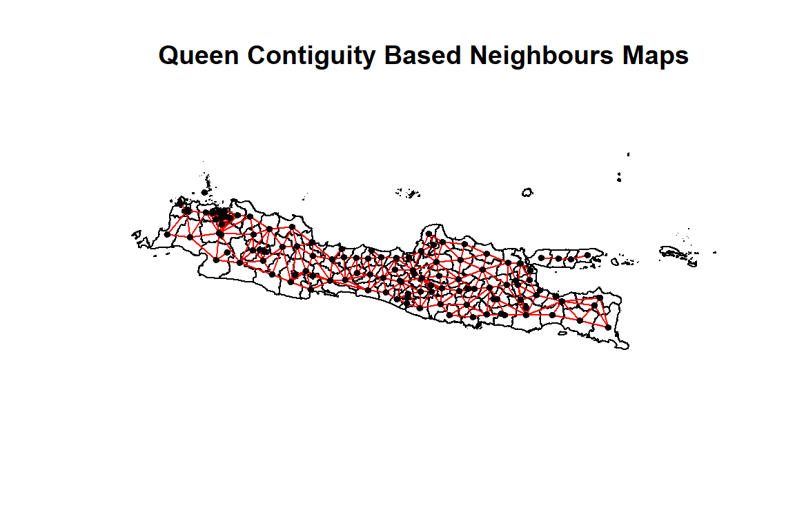

Model Epidemiologi
Deskripsi
Regresi binomial negatif digunakan untuk mengatasi overdisversi pada regresi Poisson. Pada regresi binomial negatif dapat ditambahkan efek dependensi spasial dan dapat dimodelkan menggunakan GLMM (Generalized Linear Mixed Models). Model ini juga dikenal sebagai conditional autoregressive regression (CAR). Pemodelan CAR umumnya menggunakan metode pendugaan Bayes dengan pendugaan sebaran posterior yang efisien menggunakan Integrated Nested Laplace Aproximation (INLA).
GLMM adalah pengembangan GLM yang terdapat penambahan komponen acak pada bagian prediktor model. GLMM dapat digunakan untuk menangani situasi yang terdapat korelasi antar observasi atau terdapat beberapa jenis kelompok dalam data, maupun juga data longitudinal (McCulloch, 2003). Persamaan umum dari GLMM bisa dibentuk dengan memodifikasi model GLM dengan menambahkan efek acak \(\theta_i\) (Tufvesson et al., 2019) sebagai berikut:
\[ g(\mu_i) = X_i^T \beta + \theta_i \tag{1}\]
dengan \(\theta_i\) merupakan efek acak yang independen (unstructured random effect) dapat berupa suatu noise yang memiliki sebaran normal.
Pengembangan lain dari GLMM yaitu mempertimbangkan unsur efek acak spasial terstruktur (structured random effect) pada prediktor melalui prior CAR. Model ini sering digunakan pada beberapa ilmu seperti demografi, ekonomi, epidemiologi, dan geografi (Oliveira et al., 2020). Misalkan peubah respon \(Y = (y_1, \ldots, y_n)\) merupakan vektor univariat yang menyatakan jumlah kasus pada lokasi ke-\(i\) dan vektor predictor pada lokasi ke-\(i\) adalah \(X_i^T = (1, x_{1i}, x_{2i}, \ldots, x_{pi})\) dengan \(i = 1, 2, 3, \ldots, n\) dengan jumlah peubah bebas \(p\). Adapun unsur efek acak spasial terstruktur direpresentasikan oleh \(\phi = (\phi_1, \phi_2, \ldots, \phi_n)\), dengan formulasi model CAR sebagai berikut:
\[ y_i \mid \mu_i \sim f(y_i \mid \mu_i, v^2) \tag{2}\]
\[ g(\mu_i) = X_i^T \beta + \phi_i \tag{3}\]
Seperti halnya pada GLM, peubah respon \(y_i\) berasal dari anggota keluarga sebaran eksponensial \(f(y_i \mid \mu_i, v^2)\) dengan \(v^2\) merupakan parameter skala yang digunakan untuk sebaran normal. Untuk sebaran binomial negatif dengan dua parameter, dengan asumsi tambahan \(v^2 = \gamma\), maka dari Persamaan 2 dan Persamaan 3 dapat dibentuk model CAR dengan fungsi sebaran binomial negatif yaitu sebagai berikut (Sparks, 2020):
\[ y_i \mid \mu_i \sim \text{NB}(y_i \mid \mu_i, \gamma) \tag{4}\]
\[ \log(\mu_i) = X_i^T \beta + \phi_i \tag{5}\]
Efek acak \(\phi_i\) dimodelkan dengan kelas sebaran prior CAR, yang merupakan jenis sebaran Gaussian Markov Random Field (GMRF). Sebaran tersebut dapat ditulis dalam bentuk \(\phi \sim N(0, \tau^2 Q^{-1})\), dengan \(Q\) merupakan matriks presisi yang mungkin berupa matriks tunggal (noninvertible matrix). Korelasi spasial antara efek acak ditentukan oleh matriks ketetanggaan biner \(W\) berukuran \(n \times n\), dengan elemen \(w_{ji}\) sama dengan satu jika area \((j,i)\) didefinisikan sebagai tetangga, dan nol jika tidak. Kemudian apabila dua area didefinisikan sebagai tetangga, maka efek randomnya akan berkorelasi, sedangkan efek random di area yang tidak bertetangga akan bebas bersyarat dengan mempertimbangkan elemen-elemen lain dari \(\phi\). Pendekatan ini paling umum yaitu, \(w_{ji}=1\) jika dan hanya jika mereka memiliki batas yang sama, yaitu dilambangkan dengan \(j \sim i\) sebagai notasi selanjutnya. Namun, setiap area harus memiliki setidaknya satu elemen positif \(w_{ji}\), sehingga jumlah suatu baris dari matriks \(W\) tidak boleh nol.
Umumnya prior CAR dispesifikasikan oleh satu set data berjumlah \(n\) memiliki sebaran bersyarat penuh univariat \(f(\phi_i \mid \phi_{-i})\) di mana \(\phi_{-i} = (\phi_1, \ldots, \phi_{i-1}, \phi_{i+1}, \ldots, \phi_i)\). Berbagai sebaran prior CAR telah banyak diperkenalkan oleh berbagai ahli terutama dalam konteks pemetaan penyakit, yaitu seperti Intrinsic CAR (ICAR), Besag York Mollié (BYM) (Besag et al., 1991), (Stern & Cressie, 1999), dan (Leroux et al., 2000). Namun pada penelitian ini hanya akan membahas prior ICAR dan BYM.
1. ICAR
Prior CAR yang paling sederhana saat ini adalah Intrinsic autoregressive (IAR), yang diusulkan oleh Besag et al. (1991) dan memiliki sebaran bersyarat penuh yaitu,
\[ \phi_i = \psi_i \tag{6}\]
\[ \psi_i \mid \psi_{-i}, W, \tau^2 \sim N\left(\frac{\sum_{j \sim i} w_{ji} \psi_i}{\sum_{j \sim i} w_{ji}}, \frac{\tau^2}{\sum_{j \sim i} w_{ji}}\right) \tag{7}\]
\[ \tau^2 \sim \text{Inverse-Gamma}(a, b) \tag{8}\]
Nilai harapan bersyarat dari \(\psi_i\) sama dengan rata-rata dari efek acak di area tetangga, sedangkan ragam bersyarat berbanding terbalik dengan jumlah tetangga. Kemudian struktur ragam dari \(\psi_i\) ini akan memiliki korelasi spasial yang kuat, apabila semakin banyak tetangga yang dimiliki oleh suatu area. Parameter ragam \(\tau^2\) digunakan untuk mengontrol besarnya variasi antara efek acak, yang pada umumnya mengikuti proses sebaran invers gamma.
2. BYM
Prior konvolusi atau Besag-York-Mollie (BYM) pertama kali dijelaskan oleh Besag et al. (1991). Memiliki efek acak yang dari dua komponen, yaitu mengkombinasikan efek acak spasial terstruktur (structured random effect) pada Persamaan Persamaan 6 dengan efek acak yang independen (unstructured random effect) seperti pada Persamaan 7. Model ini memiliki bentuk sebagai berikut,
\[ \phi_i = \psi_i + \theta_i \tag{9}\]
\[ \psi_i \mid \psi_{-i}, W, \tau^2 \sim N\left(\frac{\sum_{j \sim i} w_{ji} \psi_i}{\sum_{j \sim i} w_{ji}}, \frac{\tau^2}{\sum_{j \sim i} w_{ji}}\right) \tag{10}\]
\[ \theta_i \sim N(0, \sigma^2) \tag{11}\]
\[ \tau^2, \sigma^2 \sim \text{Inverse-Gamma}(a, b) \tag{12}\]
Efek acak \(\theta = (\theta_1, \theta_2, \ldots, \theta_n)\) bersifat independen dengan mean nol dan ragam konstan, sedangkan efek acak autokorelasi spasial dimodelkan melalui \(\psi\). Model ini merupakan model CAR yang paling sering digunakan dalam praktiknya.
Data
Penelitian ini menggunakan data Profil Kesehatan 2021 dari setiap provinsi di Pulau Jawa, yaitu Provinsi Banten, DKI Jakarta, Jawa Barat, DI Yogyakarta, Jawa Tengah, dan Jawa Timur. Satuan pengamatan pada penelitian ini adalah kabupaten/ kota di seluruh Pulau Jawa, yakni 119 kabupaten/kota. Peubah yang digunakan pada penelitian ini dapat dilihat pada Tabel 1. Penelitian selengkapnya terdapat (Fitri et al., 2024).
| Peubah | Keterangan | Faktor | Literatur |
|---|---|---|---|
| \(Y\) | Banyaknya stunting per 100.000 balita | ||
| \(X_1\) | Persentase balita yang mendapatkan ASI eksklusif | Faktor asupan gizi | Hasiru et al, (2022) |
| \(X_2\) | Persentase balita yang mendapatkan imunisasi dasar lengkap | Faktor pelayanan kesehatan | Manaf et al, (2022) |
| \(X_3\) | Persentase keluarga dengan akses sanitasi layak | Faktor pola asuh | Fadliana dan Drajat (2021) |
| \(X_4\) | Persentase penduduk miskin | Faktor ekonomi | Bele et al, (2022) |
Tahapan Analisis Data
Metode yang digunakan dalam analisis data stunting Negative Binomial Conditional Autoregressive (CAR) dengan pendekatan INLA. Pengolahan data menggunakan software R Studio. Tahapan analisis data yang dilakukan adalah sebagai berikut:
Melakukan eksplorasi pada data penelitian
Medeteksi multikolinieritas antar peubah penjelas menggunakan nilai VIF (Variance Inflation Factor), jika didapatkan nilai
VIF > 10maka dapat dikatakan bahwa terjadi multikolinearitas pada data (Kutner MH, 2005), sehingga perlu dilakukan penanganan lebih lanjut sebelum dilakukannya pemodelan.Memeriksa overdispersi, dengan melihat nilai devians dan chi-kuadrat pearson dibagi dengan derajat bebasnya. Jika nilai tersebut bernilai lebih dari satu maka terdapat overdispersi pada data, sehingga dapat menggunakan sebaran yang lebih fleksibel seperti sebaran binomial negatif.
-
Menghitung Matriks Pembobotan Spasial (\(W\)) dengan menggunakan queen contiguity, eksponensial jarak (exponential weight), kebalikan jarak (inverse distance weight), dan pembobot tetangga terdekat (k-Nearest Neighbor Weight) berikut rincian setiap pembobotan yang dilakukan (Djuraidah et al, 2022):
-
Untuk queen contiguity, pembobotan dilakukan dengan menggunakan rumus berikut:
\[ w_{ij} = \begin{cases} 1 & \text{jika } i \text{ dan } j \text{ bersinggungan} \\ 0 & \text{jika } i \text{ dan } j \text{ tidak bersinggungan} \end{cases} \]
-
Untuk bobot eksponensial (exponential weight), pembobotan dilakukan dengan menggunakan rumus berikut:
\[ w_{ij} = \exp(-d_{ij}) \]
dengan \(d_{ij}\) adalah jarak antara luas ke-\(i\) dan luas ke-\(j\).
-
Untuk bobot jarak terbalik (inverse distance weight), pembobotan dilakukan dengan menggunakan rumus berikut:
\[ w_{ij} = d_{ij}^{-1} \]
-
Untuk pembobot KNN:
- Hitung jarak pusat antara unit ke-\(i\) terhadap seluruh unit lainnya \(j \neq i\).
- Beri peringkat sebagai berikut \(d_{ij}(1) \leq d_{ij}(2) \leq \dots \leq d_{ij}(n-1)\).
- Kemudian untuk setiap \(k=1,\dots,n-1\), atur \(N_k (i) = \{j(1),j(2),\dots,j(k)\}\) yang berisi \(k\) unit terdekat terhadap \(i\).
- Untuk setiap \(k\), matriks pembobot \(W\) memiliki elemen \(w_{ij}\) bernilai 1 jika daerah \(i\) berdekatan dengan daerah \(j\), sedangkan elemen diagonal utama akan selalu bernilai nol.
-
-
Melakukan uji autokorelasi spasial dengan menghitung nilai indeks Moran pada peubah respon (Anselin, 1988), dengan langkah-langkah berikut:
Hipotesis
\[ H_0 : \text{Tidak terdapat autokorelasi spasial pada data} \]
\[ H_1 : \text{Terdapat autokorelasi spasial pada data} \]
Statistik Uji \[ z = \frac{(I - E(I))}{\sqrt{\text{var}(I)}} \]
dengan \[ I = \frac{\sum_{i=1}^{n}\sum_{j=1}^{n}W_{ij}(x_i-\bar{x})(x_j-\bar{x})}{S_0 \sum_{i=1}^{n}(x_i-\bar{x})^2} \]
Kriteria pengujiannya \(H_0\) ditolak jika nilai \(|Z| > Z_{(\alpha/2)}\)
-
Melakukan pendugaan model Negative Binomial CAR dengan pendekatan INLA,
6.1 Membuat model yang terdapat empat model yang akan dilihat (Sparks, 2018):
Model GLM: \[ \eta_i = X_i^T \beta \]
Model GLMM: \[ \eta_i = X_i^T \beta + \theta_i \]
Model ICAR: \[ \eta_i = X_i^T \beta + \psi_i \]
Model BYM: \[ \eta_i = X_i^T \beta + \psi_i + \theta_i \]
6.2 Menentukan sebaran prior untuk hiperparameter pada model dengan ketentuan nilai prior:
Model GLM, prior ~ Normal Structured Random Effect, \(\psi_i|\psi_{(-i)} \sim N\left(\frac{\sum_{j\sim i} w_{ji} \psi_i}{\sum_{j\sim i} w_{ji}}, \frac{\tau^2}{\sum_{j\sim i} w_{ji}}\right)\) Unstructured Random Effect, \(\theta_i \sim N(0, \sigma^2)\) Ragam \(\psi_i\), \(\tau^2 \sim \text{Inverse-Gamma}(1, 0.0005)\) Ragam \(\theta_i\), \(\sigma^2 \sim \text{Inverse-Gamma}(1, 0.0005)\)
-
Memilih model terbaik dengan mempertimbangkan beberapa kriteria sebagai berikut:
Defiance Information Criterion (DIC) (Wang et al, 2018) \[ \text{DIC} = \overline{D} + 2PD \]
dengan
\[ PD = E(D(\theta)) - D(E(\theta)) = \overline{D} - D(\theta_{\overline{}}) \]
dan
\[ D(\theta) = -2\log(p(y^*|\theta)) \]
Semakin kecil nilai AIC, maka model yang dibangun semakin baik.
Mean Absolute Deviance (MAD)
\[ \text{MAD} = \frac{\sum_{i=1}^{n}|y_i-\hat{y}_i|}{N} \]
dengan \(y_i\) adalah respon pada lokasi ke \(i\), \(\hat{y}_i\) adalah hasil prediksi pada lokasi ke \(i\) dan \(N\) adalah jumlah lokasi pengamatan. Semakin kecil nilai MAD, maka semakin kecil kesalahan hasil pendugaan.
-
Menghitung nilai resiko relatif dari model terbaik berdasarkan kriteria dari kebaikan model pada langkah ke-7. Risiko relatif ditentukan dengan cara mengeksponensialkan komponen acak terstruktur spasial \(\psi_i\) dari model terbaik menggunakan rumus sebagai berikut (Blangiardo dan Cameletti, 2015) dengan formula:
\[ \text{RR}_i = e^{\psi_i} \]
dengan \(\psi_i\) adalah efek acak terstruktur spasial.
Menginterpretasikan hasil penelitian dan menarik kesimpulan
Package
Data
jawa <- readOGR(dsn = "data/shp", layer = "jawa2")
#> Warning in readOGR(dsn = "data/shp", layer = "jawa2"): OGR support
#> is provided by the sf and terra packages among others
#> Warning in ogrInfo(dsn = dsn, layer = layer, encoding = encoding,
#> use_iconv = use_iconv, : OGR support is provided by the sf and
#> terra packages among others
#> Warning in ogrFIDs(dsn = dsn, layer = layer): OGR support is
#> provided by the sf and terra packages among others
#> Warning in OGRSpatialRef(dsn, layer, morphFromESRI = morphFromESRI,
#> dumpSRS = dumpSRS, : OGR support is provided by the sf and terra
#> packages among others
#> Warning in ogrListLayers(dsn): OGR support is provided by the sf
#> and terra packages among others
#> Warning in ogrFIDs(dsn = dsn, layer = layer): OGR support is
#> provided by the sf and terra packages among others
#> OGR data source with driver: ESRI Shapefile
#> Source: "C:\Users\anugraha\Documents\Materi_Orasi\book\data\shp", layer: "jawa2"
#> with 119 features
#> It has 1 fields
jawa_data <- read_excel("data/data_stunting_epidemiologi.xlsx")
jawa_data <- jawa_data %>%
mutate(logStunting = log(Stunting), E_d = mean(Stunting))
jawa@data <- left_join(jawa@data, jawa_data)
#> Joining with `by = join_by(KabKota)`
jawa@data$ID <- 1:nrow(jawa@data)
summary(jawa_data)
#> Provinsi KabKota Stunting
#> Length:119 Length:119 Min. : 1
#> Class :character Class :character 1st Qu.: 22
#> Mode :character Mode :character Median : 40
#> Mean : 57
#> 3rd Qu.: 67
#> Max. :368
#> Imunisasi IMD ASI BBLR
#> Min. : 0.0 Min. : 30.6 Min. : 41.1 Min. : 0.0
#> 1st Qu.: 80.8 1st Qu.: 75.4 1st Qu.: 61.9 1st Qu.: 2.8
#> Median : 93.9 Median : 82.7 Median : 72.6 Median : 4.0
#> Mean : 88.3 Mean : 80.7 Mean : 70.4 Mean : 4.7
#> 3rd Qu.: 99.0 3rd Qu.: 89.6 3rd Qu.: 79.3 3rd Qu.: 5.3
#> Max. :138.5 Max. :110.3 Max. :100.0 Max. :66.4
#> Sanitasi TPM Miskin RLS
#> Min. : 4.8 Min. : 9.2 Min. : 2.57 Min. : 3.48
#> 1st Qu.: 90.2 1st Qu.: 51.4 1st Qu.: 7.47 1st Qu.: 7.18
#> Median : 97.7 Median : 62.8 Median :10.21 Median : 8.10
#> Mean : 92.9 Mean : 61.7 Mean :10.34 Mean : 8.47
#> 3rd Qu.:100.0 3rd Qu.: 74.5 3rd Qu.:12.69 3rd Qu.:10.01
#> Max. :232.2 Max. :100.0 Max. :23.76 Max. :11.89
#> kepadatan kb_aktif posyandu Pengeluaran
#> Min. : 280 Min. : 40.8 Min. : 0.1 Min. : 7829
#> 1st Qu.: 782 1st Qu.: 68.8 1st Qu.: 67.4 1st Qu.: 9830
#> Median : 1124 Median : 72.9 Median : 81.1 Median :10942
#> Mean : 3242 Mean : 73.6 Mean : 76.7 Mean :11749
#> 3rd Qu.: 3312 3rd Qu.: 78.3 3rd Qu.: 90.8 3rd Qu.:12762
#> Max. :20360 Max. :145.5 Max. :118.5 Max. :23888
#> Pengangguran Gini Kode Lat
#> Min. : 2.04 Min. :0.264 Min. : 1.0 Min. :-8.22
#> 1st Qu.: 4.79 1st Qu.:0.320 1st Qu.: 30.5 1st Qu.:-7.66
#> Median : 6.55 Median :0.340 Median : 60.0 Median :-7.19
#> Mean : 6.86 Mean :0.348 Mean : 60.0 Mean :-7.18
#> 3rd Qu.: 9.10 3rd Qu.:0.370 3rd Qu.: 89.5 3rd Qu.:-6.83
#> Max. :13.07 Max. :0.489 Max. :119.0 Max. :-5.75
#> Long kode_prov logStunting E_d
#> Min. :106 Min. :31.0 Min. :0.00 Min. :56.6
#> 1st Qu.:108 1st Qu.:32.0 1st Qu.:3.11 1st Qu.:56.6
#> Median :110 Median :33.0 Median :3.69 Median :56.6
#> Mean :110 Mean :33.6 Mean :3.62 Mean :56.6
#> 3rd Qu.:112 3rd Qu.:35.0 3rd Qu.:4.20 3rd Qu.:56.6
#> Max. :114 Max. :36.0 Max. :5.91 Max. :56.6palette(terrain.colors(6))
plot(jawa, col=jawa$kode_prov-30)
text(jawa,'Kode',cex=0.5)
Exploratory Data Analysis
Stunting
my.palette.1<-brewer.pal(n=4,name="OrRd")
spplot(jawa,'Stunting', cuts=3, col.regions=my.palette.1, cex=c(0.3,1,0.3), main="Banyaknya Stunting per 100.000 di Pulau Jawa", at = c(min(jawa$Stunting) - 1, 50, 100, 150, max(jawa$Stunting) + 1))
Insidensi stunting tinggi banyak terjadi di Jawa Barat, dengan kasus tertinggi di Kabupaten Bogor.
ASI
my.palette.1<-brewer.pal(n=4,name="OrRd")
spplot(jawa,'ASI', cuts=3, col.regions=my.palette.1, cex=c(0.3,1,0.3), main="Persentase tingkat balita yang mendapatkan ASI eksklusif di Pulau Jawa")Imunisasi

Sanitasi

Miskin
my.palette.1<-brewer.pal(n=4,name="OrRd")
spplot(jawa,'Miskin', cuts=3, col.regions=my.palette.1, cex=c(0.3,1,0.3), main="Persentase Penduduk Miskin di Pulau Jawa")
Correlation plot
eda_data <- jawa_data %>%
dplyr::select(Stunting, ASI,Imunisasi, Sanitasi, Miskin)
PerformanceAnalytics::chart.Correlation(eda_data, histogram = TRUE, pch = 19)
#> Warning in par(usr): argument 1 does not name a graphical parameter
#> Warning in par(usr): argument 1 does not name a graphical parameter
#> Warning in par(usr): argument 1 does not name a graphical parameter
#> Warning in par(usr): argument 1 does not name a graphical parameter
#> Warning in par(usr): argument 1 does not name a graphical parameter
#> Warning in par(usr): argument 1 does not name a graphical parameter
#> Warning in par(usr): argument 1 does not name a graphical parameter
#> Warning in par(usr): argument 1 does not name a graphical parameter
#> Warning in par(usr): argument 1 does not name a graphical parameter
#> Warning in par(usr): argument 1 does not name a graphical parameter
Correlation Matrix
round(cor(eda_data), 4)
#> Stunting ASI Imunisasi Sanitasi Miskin
#> Stunting 1.0000 -0.0661 -0.0606 -0.1665 0.1187
#> ASI -0.0661 1.0000 0.1349 -0.0172 0.0292
#> Imunisasi -0.0606 0.1349 1.0000 -0.0314 -0.0364
#> Sanitasi -0.1665 -0.0172 -0.0314 1.0000 -0.0176
#> Miskin 0.1187 0.0292 -0.0364 -0.0176 1.0000Correlation plot
eda_data <- jawa_data %>%
dplyr::select(ASI, Imunisasi, Sanitasi, Miskin)
PerformanceAnalytics::chart.Correlation(eda_data, histogram = TRUE, pch = 19)
#> Warning in par(usr): argument 1 does not name a graphical parameter
#> Warning in par(usr): argument 1 does not name a graphical parameter
#> Warning in par(usr): argument 1 does not name a graphical parameter
#> Warning in par(usr): argument 1 does not name a graphical parameter
#> Warning in par(usr): argument 1 does not name a graphical parameter
#> Warning in par(usr): argument 1 does not name a graphical parameterCorrelation Matrix
Multicollinearity Test
Dari nilai VIF di atas yang kurang dari 10 menunjukkan bahwa tidak terdapat multikolinieritas antar peubah penjelas.
Overdispersion Test
#Cek Overdispersi
poisson<-glm(jawa_data$Stunting ~ jawa_data$ASI + jawa_data$Imunisasi + jawa_data$Sanitasi + jawa_data$Miskin, data=jawa_data, family = poisson())
model1 <- glm(jawa_data$Stunting~1, data=jawa_data, family = poisson())
dispersiontest(poisson)
#>
#> Overdispersion test
#>
#> data: poisson
#> z = 3, p-value = 0.002
#> alternative hypothesis: true dispersion is greater than 1
#> sample estimates:
#> dispersion
#> 55.2
summary(poisson)
#>
#> Call:
#> glm(formula = jawa_data$Stunting ~ jawa_data$ASI + jawa_data$Imunisasi +
#> jawa_data$Sanitasi + jawa_data$Miskin, family = poisson(),
#> data = jawa_data)
#>
#> Coefficients:
#> Estimate Std. Error z value Pr(>|z|)
#> (Intercept) 4.988258 0.096277 51.81 < 2e-16 ***
#> jawa_data$ASI -0.003785 0.000967 -3.91 9.1e-05 ***
#> jawa_data$Imunisasi -0.002410 0.000581 -4.15 3.4e-05 ***
#> jawa_data$Sanitasi -0.008468 0.000601 -14.09 < 2e-16 ***
#> jawa_data$Miskin 0.028068 0.002810 9.99 < 2e-16 ***
#> ---
#> Signif. codes: 0 '***' 0.001 '**' 0.01 '*' 0.05 '.' 0.1 ' ' 1
#>
#> (Dispersion parameter for poisson family taken to be 1)
#>
#> Null deviance: 5011.7 on 118 degrees of freedom
#> Residual deviance: 4685.6 on 114 degrees of freedom
#> AIC: 5346
#>
#> Number of Fisher Scoring iterations: 5
anova(model1, poisson, test="Chisq")
#> Analysis of Deviance Table
#>
#> Model 1: jawa_data$Stunting ~ 1
#> Model 2: jawa_data$Stunting ~ jawa_data$ASI + jawa_data$Imunisasi + jawa_data$Sanitasi +
#> jawa_data$Miskin
#> Resid. Df Resid. Dev Df Deviance Pr(>Chi)
#> 1 118 5012
#> 2 114 4686 4 326 <2e-16 ***
#> ---
#> Signif. codes: 0 '***' 0.001 '**' 0.01 '*' 0.05 '.' 0.1 ' ' 1Diperoleh p-value < 0.05, yang artinya bahwa nilai dispersi lebih dari 1. Sehingga dapat disimpulkan bahwa terdapat dispersi pada data.
#Cek Sebaran
poisson <- fitdist(jawa_data$Stunting, "pois", method = c("mle", "mme", "qme", "mge", "mse"),
start=NULL, fix.arg=NULL, T, keepdata = TRUE)
binom.negatif <- fitdist(jawa_data$Stunting, "nbinom", method = c("mle", "mme", "qme", "mge", "mse"),
start=NULL, fix.arg=NULL, T, keepdata = TRUE)
qqcomp(list(poisson, binom.negatif), legendtext = c("Pois", "Neg Binom"), fitpch="o", fitcol = c("red","green"))
descdist(jawa_data$Stunting, discrete = TRUE, boot=1000)
#> summary statistics
#> ------
#> min: 1 max: 368
#> median: 40
#> mean: 56.6
#> estimated sd: 56.6
#> estimated skewness: 2.66
#> estimated kurtosis: 12.6
Spatial Weighted Matrix
Queen continguity
wm_q <- poly2nb(jawa, queen = TRUE)
#> Warning in poly2nb(jawa, queen = TRUE): some observations have no neighbours;
#> if this seems unexpected, try increasing the snap argument.
#> Warning in poly2nb(jawa, queen = TRUE): neighbour object has 3 sub-graphs;
#> if this sub-graph count seems unexpected, try increasing the snap argument.
summary(wm_q)
#> Neighbour list object:
#> Number of regions: 119
#> Number of nonzero links: 520
#> Percentage nonzero weights: 3.67
#> Average number of links: 4.37
#> 1 region with no links:
#> 0
#> 3 disjoint connected subgraphs
#> Link number distribution:
#>
#> 0 1 2 3 4 5 6 7 8 9 11
#> 1 15 10 13 22 20 20 11 4 2 1
#> 15 least connected regions:
#> 3 45 46 47 49 51 53 54 55 56 58 59 61 62 109 with 1 link
#> 1 most connected region:
#> 12 with 11 links- Terdapat 119 Kabupaten/Kota di Pulau Jawa.
- Terdapat satu daerah yang tidak bersinggungan dengan daerah lain, yaitu Kepulauan Seribu.
- Daerah yang paling banyak bersinggungan dengan daerah lain, yaitu Bogor yang bersinggungan dengan 11 daerah.
plot(jawa, borders = 'lightgrey', main = "Queen Contiguity Based Neighbours Maps")
#> Warning in title(...): "borders" is not a graphical parameter
#> Warning in polypath(x = mcrds[, 1], y = mcrds[, 2], border =
#> border, col = col, : "borders" is not a graphical parameter
#> Warning in polypath(x = mcrds[, 1], y = mcrds[, 2], border =
#> border, col = col, : "borders" is not a graphical parameter
#> Warning in polypath(x = mcrds[, 1], y = mcrds[, 2], border =
#> border, col = col, : "borders" is not a graphical parameter
#> Warning in polypath(x = mcrds[, 1], y = mcrds[, 2], border =
#> border, col = col, : "borders" is not a graphical parameter
#> Warning in polypath(x = mcrds[, 1], y = mcrds[, 2], border =
#> border, col = col, : "borders" is not a graphical parameter
#> Warning in polypath(x = mcrds[, 1], y = mcrds[, 2], border =
#> border, col = col, : "borders" is not a graphical parameter
#> Warning in polypath(x = mcrds[, 1], y = mcrds[, 2], border =
#> border, col = col, : "borders" is not a graphical parameter
#> Warning in polypath(x = mcrds[, 1], y = mcrds[, 2], border =
#> border, col = col, : "borders" is not a graphical parameter
#> Warning in polypath(x = mcrds[, 1], y = mcrds[, 2], border =
#> border, col = col, : "borders" is not a graphical parameter
#> Warning in polypath(x = mcrds[, 1], y = mcrds[, 2], border =
#> border, col = col, : "borders" is not a graphical parameter
#> Warning in polypath(x = mcrds[, 1], y = mcrds[, 2], border =
#> border, col = col, : "borders" is not a graphical parameter
#> Warning in polypath(x = mcrds[, 1], y = mcrds[, 2], border =
#> border, col = col, : "borders" is not a graphical parameter
#> Warning in polypath(x = mcrds[, 1], y = mcrds[, 2], border =
#> border, col = col, : "borders" is not a graphical parameter
#> Warning in polypath(x = mcrds[, 1], y = mcrds[, 2], border =
#> border, col = col, : "borders" is not a graphical parameter
#> Warning in polypath(x = mcrds[, 1], y = mcrds[, 2], border =
#> border, col = col, : "borders" is not a graphical parameter
#> Warning in polypath(x = mcrds[, 1], y = mcrds[, 2], border =
#> border, col = col, : "borders" is not a graphical parameter
#> Warning in polypath(x = mcrds[, 1], y = mcrds[, 2], border =
#> border, col = col, : "borders" is not a graphical parameter
#> Warning in polypath(x = mcrds[, 1], y = mcrds[, 2], border =
#> border, col = col, : "borders" is not a graphical parameter
#> Warning in polypath(x = mcrds[, 1], y = mcrds[, 2], border =
#> border, col = col, : "borders" is not a graphical parameter
#> Warning in polypath(x = mcrds[, 1], y = mcrds[, 2], border =
#> border, col = col, : "borders" is not a graphical parameter
#> Warning in polypath(x = mcrds[, 1], y = mcrds[, 2], border =
#> border, col = col, : "borders" is not a graphical parameter
#> Warning in polypath(x = mcrds[, 1], y = mcrds[, 2], border =
#> border, col = col, : "borders" is not a graphical parameter
#> Warning in polypath(x = mcrds[, 1], y = mcrds[, 2], border =
#> border, col = col, : "borders" is not a graphical parameter
#> Warning in polypath(x = mcrds[, 1], y = mcrds[, 2], border =
#> border, col = col, : "borders" is not a graphical parameter
#> Warning in polypath(x = mcrds[, 1], y = mcrds[, 2], border =
#> border, col = col, : "borders" is not a graphical parameter
#> Warning in polypath(x = mcrds[, 1], y = mcrds[, 2], border =
#> border, col = col, : "borders" is not a graphical parameter
#> Warning in polypath(x = mcrds[, 1], y = mcrds[, 2], border =
#> border, col = col, : "borders" is not a graphical parameter
#> Warning in polypath(x = mcrds[, 1], y = mcrds[, 2], border =
#> border, col = col, : "borders" is not a graphical parameter
#> Warning in polypath(x = mcrds[, 1], y = mcrds[, 2], border =
#> border, col = col, : "borders" is not a graphical parameter
#> Warning in polypath(x = mcrds[, 1], y = mcrds[, 2], border =
#> border, col = col, : "borders" is not a graphical parameter
#> Warning in polypath(x = mcrds[, 1], y = mcrds[, 2], border =
#> border, col = col, : "borders" is not a graphical parameter
#> Warning in polypath(x = mcrds[, 1], y = mcrds[, 2], border =
#> border, col = col, : "borders" is not a graphical parameter
#> Warning in polypath(x = mcrds[, 1], y = mcrds[, 2], border =
#> border, col = col, : "borders" is not a graphical parameter
#> Warning in polypath(x = mcrds[, 1], y = mcrds[, 2], border =
#> border, col = col, : "borders" is not a graphical parameter
#> Warning in polypath(x = mcrds[, 1], y = mcrds[, 2], border =
#> border, col = col, : "borders" is not a graphical parameter
#> Warning in polypath(x = mcrds[, 1], y = mcrds[, 2], border =
#> border, col = col, : "borders" is not a graphical parameter
#> Warning in polypath(x = mcrds[, 1], y = mcrds[, 2], border =
#> border, col = col, : "borders" is not a graphical parameter
#> Warning in polypath(x = mcrds[, 1], y = mcrds[, 2], border =
#> border, col = col, : "borders" is not a graphical parameter
#> Warning in polypath(x = mcrds[, 1], y = mcrds[, 2], border =
#> border, col = col, : "borders" is not a graphical parameter
#> Warning in polypath(x = mcrds[, 1], y = mcrds[, 2], border =
#> border, col = col, : "borders" is not a graphical parameter
#> Warning in polypath(x = mcrds[, 1], y = mcrds[, 2], border =
#> border, col = col, : "borders" is not a graphical parameter
#> Warning in polypath(x = mcrds[, 1], y = mcrds[, 2], border =
#> border, col = col, : "borders" is not a graphical parameter
#> Warning in polypath(x = mcrds[, 1], y = mcrds[, 2], border =
#> border, col = col, : "borders" is not a graphical parameter
#> Warning in polypath(x = mcrds[, 1], y = mcrds[, 2], border =
#> border, col = col, : "borders" is not a graphical parameter
#> Warning in polypath(x = mcrds[, 1], y = mcrds[, 2], border =
#> border, col = col, : "borders" is not a graphical parameter
#> Warning in polypath(x = mcrds[, 1], y = mcrds[, 2], border =
#> border, col = col, : "borders" is not a graphical parameter
#> Warning in polypath(x = mcrds[, 1], y = mcrds[, 2], border =
#> border, col = col, : "borders" is not a graphical parameter
#> Warning in polypath(x = mcrds[, 1], y = mcrds[, 2], border =
#> border, col = col, : "borders" is not a graphical parameter
#> Warning in polypath(x = mcrds[, 1], y = mcrds[, 2], border =
#> border, col = col, : "borders" is not a graphical parameter
#> Warning in polypath(x = mcrds[, 1], y = mcrds[, 2], border =
#> border, col = col, : "borders" is not a graphical parameter
#> Warning in polypath(x = mcrds[, 1], y = mcrds[, 2], border =
#> border, col = col, : "borders" is not a graphical parameter
#> Warning in polypath(x = mcrds[, 1], y = mcrds[, 2], border =
#> border, col = col, : "borders" is not a graphical parameter
#> Warning in polypath(x = mcrds[, 1], y = mcrds[, 2], border =
#> border, col = col, : "borders" is not a graphical parameter
#> Warning in polypath(x = mcrds[, 1], y = mcrds[, 2], border =
#> border, col = col, : "borders" is not a graphical parameter
#> Warning in polypath(x = mcrds[, 1], y = mcrds[, 2], border =
#> border, col = col, : "borders" is not a graphical parameter
#> Warning in polypath(x = mcrds[, 1], y = mcrds[, 2], border =
#> border, col = col, : "borders" is not a graphical parameter
#> Warning in polypath(x = mcrds[, 1], y = mcrds[, 2], border =
#> border, col = col, : "borders" is not a graphical parameter
#> Warning in polypath(x = mcrds[, 1], y = mcrds[, 2], border =
#> border, col = col, : "borders" is not a graphical parameter
#> Warning in polypath(x = mcrds[, 1], y = mcrds[, 2], border =
#> border, col = col, : "borders" is not a graphical parameter
#> Warning in polypath(x = mcrds[, 1], y = mcrds[, 2], border =
#> border, col = col, : "borders" is not a graphical parameter
#> Warning in polypath(x = mcrds[, 1], y = mcrds[, 2], border =
#> border, col = col, : "borders" is not a graphical parameter
#> Warning in polypath(x = mcrds[, 1], y = mcrds[, 2], border =
#> border, col = col, : "borders" is not a graphical parameter
#> Warning in polypath(x = mcrds[, 1], y = mcrds[, 2], border =
#> border, col = col, : "borders" is not a graphical parameter
#> Warning in polypath(x = mcrds[, 1], y = mcrds[, 2], border =
#> border, col = col, : "borders" is not a graphical parameter
#> Warning in polypath(x = mcrds[, 1], y = mcrds[, 2], border =
#> border, col = col, : "borders" is not a graphical parameter
#> Warning in polypath(x = mcrds[, 1], y = mcrds[, 2], border =
#> border, col = col, : "borders" is not a graphical parameter
#> Warning in polypath(x = mcrds[, 1], y = mcrds[, 2], border =
#> border, col = col, : "borders" is not a graphical parameter
#> Warning in polypath(x = mcrds[, 1], y = mcrds[, 2], border =
#> border, col = col, : "borders" is not a graphical parameter
#> Warning in polypath(x = mcrds[, 1], y = mcrds[, 2], border =
#> border, col = col, : "borders" is not a graphical parameter
#> Warning in polypath(x = mcrds[, 1], y = mcrds[, 2], border =
#> border, col = col, : "borders" is not a graphical parameter
#> Warning in polypath(x = mcrds[, 1], y = mcrds[, 2], border =
#> border, col = col, : "borders" is not a graphical parameter
#> Warning in polypath(x = mcrds[, 1], y = mcrds[, 2], border =
#> border, col = col, : "borders" is not a graphical parameter
#> Warning in polypath(x = mcrds[, 1], y = mcrds[, 2], border =
#> border, col = col, : "borders" is not a graphical parameter
#> Warning in polypath(x = mcrds[, 1], y = mcrds[, 2], border =
#> border, col = col, : "borders" is not a graphical parameter
#> Warning in polypath(x = mcrds[, 1], y = mcrds[, 2], border =
#> border, col = col, : "borders" is not a graphical parameter
#> Warning in polypath(x = mcrds[, 1], y = mcrds[, 2], border =
#> border, col = col, : "borders" is not a graphical parameter
#> Warning in polypath(x = mcrds[, 1], y = mcrds[, 2], border =
#> border, col = col, : "borders" is not a graphical parameter
#> Warning in polypath(x = mcrds[, 1], y = mcrds[, 2], border =
#> border, col = col, : "borders" is not a graphical parameter
#> Warning in polypath(x = mcrds[, 1], y = mcrds[, 2], border =
#> border, col = col, : "borders" is not a graphical parameter
#> Warning in polypath(x = mcrds[, 1], y = mcrds[, 2], border =
#> border, col = col, : "borders" is not a graphical parameter
#> Warning in polypath(x = mcrds[, 1], y = mcrds[, 2], border =
#> border, col = col, : "borders" is not a graphical parameter
#> Warning in polypath(x = mcrds[, 1], y = mcrds[, 2], border =
#> border, col = col, : "borders" is not a graphical parameter
#> Warning in polypath(x = mcrds[, 1], y = mcrds[, 2], border =
#> border, col = col, : "borders" is not a graphical parameter
#> Warning in polypath(x = mcrds[, 1], y = mcrds[, 2], border =
#> border, col = col, : "borders" is not a graphical parameter
#> Warning in polypath(x = mcrds[, 1], y = mcrds[, 2], border =
#> border, col = col, : "borders" is not a graphical parameter
#> Warning in polypath(x = mcrds[, 1], y = mcrds[, 2], border =
#> border, col = col, : "borders" is not a graphical parameter
#> Warning in polypath(x = mcrds[, 1], y = mcrds[, 2], border =
#> border, col = col, : "borders" is not a graphical parameter
#> Warning in polypath(x = mcrds[, 1], y = mcrds[, 2], border =
#> border, col = col, : "borders" is not a graphical parameter
#> Warning in polypath(x = mcrds[, 1], y = mcrds[, 2], border =
#> border, col = col, : "borders" is not a graphical parameter
#> Warning in polypath(x = mcrds[, 1], y = mcrds[, 2], border =
#> border, col = col, : "borders" is not a graphical parameter
#> Warning in polypath(x = mcrds[, 1], y = mcrds[, 2], border =
#> border, col = col, : "borders" is not a graphical parameter
#> Warning in polypath(x = mcrds[, 1], y = mcrds[, 2], border =
#> border, col = col, : "borders" is not a graphical parameter
#> Warning in polypath(x = mcrds[, 1], y = mcrds[, 2], border =
#> border, col = col, : "borders" is not a graphical parameter
#> Warning in polypath(x = mcrds[, 1], y = mcrds[, 2], border =
#> border, col = col, : "borders" is not a graphical parameter
#> Warning in polypath(x = mcrds[, 1], y = mcrds[, 2], border =
#> border, col = col, : "borders" is not a graphical parameter
#> Warning in polypath(x = mcrds[, 1], y = mcrds[, 2], border =
#> border, col = col, : "borders" is not a graphical parameter
#> Warning in polypath(x = mcrds[, 1], y = mcrds[, 2], border =
#> border, col = col, : "borders" is not a graphical parameter
#> Warning in polypath(x = mcrds[, 1], y = mcrds[, 2], border =
#> border, col = col, : "borders" is not a graphical parameter
#> Warning in polypath(x = mcrds[, 1], y = mcrds[, 2], border =
#> border, col = col, : "borders" is not a graphical parameter
#> Warning in polypath(x = mcrds[, 1], y = mcrds[, 2], border =
#> border, col = col, : "borders" is not a graphical parameter
#> Warning in polypath(x = mcrds[, 1], y = mcrds[, 2], border =
#> border, col = col, : "borders" is not a graphical parameter
#> Warning in polypath(x = mcrds[, 1], y = mcrds[, 2], border =
#> border, col = col, : "borders" is not a graphical parameter
#> Warning in polypath(x = mcrds[, 1], y = mcrds[, 2], border =
#> border, col = col, : "borders" is not a graphical parameter
#> Warning in polypath(x = mcrds[, 1], y = mcrds[, 2], border =
#> border, col = col, : "borders" is not a graphical parameter
#> Warning in polypath(x = mcrds[, 1], y = mcrds[, 2], border =
#> border, col = col, : "borders" is not a graphical parameter
#> Warning in polypath(x = mcrds[, 1], y = mcrds[, 2], border =
#> border, col = col, : "borders" is not a graphical parameter
#> Warning in polypath(x = mcrds[, 1], y = mcrds[, 2], border =
#> border, col = col, : "borders" is not a graphical parameter
#> Warning in polypath(x = mcrds[, 1], y = mcrds[, 2], border =
#> border, col = col, : "borders" is not a graphical parameter
#> Warning in polypath(x = mcrds[, 1], y = mcrds[, 2], border =
#> border, col = col, : "borders" is not a graphical parameter
#> Warning in polypath(x = mcrds[, 1], y = mcrds[, 2], border =
#> border, col = col, : "borders" is not a graphical parameter
#> Warning in polypath(x = mcrds[, 1], y = mcrds[, 2], border =
#> border, col = col, : "borders" is not a graphical parameter
#> Warning in polypath(x = mcrds[, 1], y = mcrds[, 2], border =
#> border, col = col, : "borders" is not a graphical parameter
#> Warning in polypath(x = mcrds[, 1], y = mcrds[, 2], border =
#> border, col = col, : "borders" is not a graphical parameter
#> Warning in polypath(x = mcrds[, 1], y = mcrds[, 2], border =
#> border, col = col, : "borders" is not a graphical parameter
#> Warning in polypath(x = mcrds[, 1], y = mcrds[, 2], border =
#> border, col = col, : "borders" is not a graphical parameter
#> Warning in polypath(x = mcrds[, 1], y = mcrds[, 2], border =
#> border, col = col, : "borders" is not a graphical parameter
#> Warning in polypath(x = mcrds[, 1], y = mcrds[, 2], border =
#> border, col = col, : "borders" is not a graphical parameter
#> Warning in polypath(x = mcrds[, 1], y = mcrds[, 2], border =
#> border, col = col, : "borders" is not a graphical parameter
#> Warning in polypath(x = mcrds[, 1], y = mcrds[, 2], border =
#> border, col = col, : "borders" is not a graphical parameter
plot(wm_q, coordinates(jawa), pch = 19, cex = 0.6, add = TRUE, col = "red")
Exponential Weight
coords <- coordinates(jawa)
dist <- nbdists(wm_q, coords, longlat = TRUE)
eds <- lapply(dist, function(x) exp(-1*x))
head(eds)
#> [[1]]
#> numeric(0)
#>
#> [[2]]
#> [1] 2.42e-14 2.36e-22 5.84e-16 2.15e-09 2.36e-11 9.44e-31 6.80e-23
#>
#> [[3]]
#> [1] 2.42e-14 1.40e-17 1.88e-11 7.20e-07 6.35e-15 1.88e-25
#>
#> [[4]]
#> [1] 1.94e-16
#>
#> [[5]]
#> [1] 2.43e-24 2.23e-19 1.95e-15 5.68e-15 8.69e-13 4.01e-13
#>
#> [[6]]
#> [1] 8.34e-14 1.60e-05 1.45e-10 1.55e-09Inverse Distance Weight
ids <- lapply(dist, function(x) 1/(x))
head(ids)
#> [[1]]
#> numeric(0)
#>
#> [[2]]
#> [1] 0.0319 0.0201 0.0285 0.0501 0.0409 0.0145 0.0196
#>
#> [[3]]
#> [1] 0.0319 0.0258 0.0405 0.0707 0.0306 0.0176
#>
#> [[4]]
#> [1] 0.0276
#>
#> [[5]]
#> [1] 0.0184 0.0233 0.0295 0.0305 0.0360 0.0350
#>
#> [[6]]
#> [1] 0.0332 0.0905 0.0441 0.0493Spatial Autocorrelation Test
rswm_q <- nb2listw(wm_q, style = "W", zero.policy = TRUE)
rswm_eds <- nb2listw(wm_q, glist = eds, style = "B", zero.policy = TRUE)
rswm_ids <- nb2listw(wm_q, glist = ids, style = "B", zero.policy = TRUE)
moran_q <- moran.test(jawa$logStunting, listw = rswm_q, zero.policy = TRUE)
moran_q
#>
#> Moran I test under randomisation
#>
#> data: jawa$logStunting
#> weights: rswm_q
#> n reduced by no-neighbour observations
#>
#> Moran I statistic standard deviate = 1, p-value = 0.2
#> alternative hypothesis: greater
#> sample estimates:
#> Moran I statistic Expectation Variance
#> 0.05915 -0.00855 0.00454
moran_eds <- moran.test(jawa$logStunting, listw = rswm_eds, zero.policy = TRUE)
moran_eds
#>
#> Moran I test under randomisation
#>
#> data: jawa$logStunting
#> weights: rswm_eds
#> n reduced by no-neighbour observations
#>
#> Moran I statistic standard deviate = -0.6, p-value = 0.7
#> alternative hypothesis: greater
#> sample estimates:
#> Moran I statistic Expectation Variance
#> -0.55751 -0.00855 0.79378
moran_ids <- moran.test(jawa$logStunting, listw = rswm_ids, zero.policy = TRUE)
moran_ids
#>
#> Moran I test under randomisation
#>
#> data: jawa$logStunting
#> weights: rswm_ids
#> n reduced by no-neighbour observations
#>
#> Moran I statistic standard deviate = -0.3, p-value = 0.6
#> alternative hypothesis: greater
#> sample estimates:
#> Moran I statistic Expectation Variance
#> -0.06538 -0.00855 0.03140| Weighted Matrix | Moran’s Index | E(I) | Var(I) | p-value |
|---|---|---|---|---|
| Queen Continuity | 0.0591 | -0.0085 | 0.0045 | 0.1576 |
| Exponential Distance | -0.5575 | -0.0085 | 0.7938 | 0.7311 |
| Inverse Distance | -0.0654 | -0.0085 | 0.0314 | 0.6258 |
Matriks Bobot
# Distance Matrix
longlat<-cbind(jawa_data$Long ,jawa_data$Lat)
gdist<-pointDistance(longlat,lonlat=TRUE)
m.gdist<-as.matrix(gdist)
djarak<-dist(longlat)
m.djarak<-as.matrix(djarak)#K-Nearest Neighbour Weight dengan k=4
koord <- coordinates(jawa)
W1<-knn2nb(knearneigh(longlat,k=4,longlat=TRUE))
WW1<- nb2listw(W1,style='W')
WW1
#> Characteristics of weights list object:
#> Neighbour list object:
#> Number of regions: 119
#> Number of nonzero links: 476
#> Percentage nonzero weights: 3.36
#> Average number of links: 4
#> Non-symmetric neighbours list
#>
#> Weights style: W
#> Weights constants summary:
#> n nn S0 S1 S2
#> W 119 14161 119 52 496MI1 <- moran.test(jawa_data$Stunting,WW1) Uji Moran
moran.test(jawa_data$Stunting, WW1,randomisation=T,
alternative="two.sided")
#>
#> Moran I test under randomisation
#>
#> data: jawa_data$Stunting
#> weights: WW1
#>
#> Moran I statistic standard deviate = 2, p-value = 0.05
#> alternative hypothesis: two.sided
#> sample estimates:
#> Moran I statistic Expectation Variance
#> 0.10526 -0.00847 0.00323Berdasarkan uji Indeks Moran di atas, diperoleh p-value < 0.05, artinya bahwa \(H_0\) ditolak. Sehingga dapat disimpulkan bahwa terdapat autokorelasi spasial pada data.
Model Estimation
GLM
glm_mod <- inla(form_fit, data = jawa@data, family = "nbinomial", E = E_d,
control.predictor = list(compute = TRUE, link = 1),
control.compute = list(dic = TRUE))
summary(glm_mod)
#> Time used:
#> Pre = 0.345, Running = 3.45, Post = 23.8, Total = 27.6
#> Fixed effects:
#> mean sd 0.025quant 0.5quant 0.975quant mode kld
#> (Intercept) 1.109 0.692 -0.248 1.109 2.468 1.109 0
#> ASI -0.005 0.006 -0.018 -0.005 0.007 -0.005 0
#> Imunisasi -0.003 0.004 -0.011 -0.003 0.005 -0.003 0
#> Sanitasi -0.009 0.004 -0.017 -0.009 -0.002 -0.009 0
#> Miskin 0.037 0.020 -0.003 0.037 0.077 0.037 0
#>
#> Model hyperparameters:
#> mean sd
#> size for the nbinomial observations (1/overdispersion) 1.51 0.184
#> 0.025quant
#> size for the nbinomial observations (1/overdispersion) 1.18
#> 0.5quant
#> size for the nbinomial observations (1/overdispersion) 1.50
#> 0.975quant
#> size for the nbinomial observations (1/overdispersion) 1.90
#> mode
#> size for the nbinomial observations (1/overdispersion) 1.49
#>
#> Deviance Information Criterion (DIC) ...............: 1196.11
#> Deviance Information Criterion (DIC, saturated) ....: -6412.69
#> Effective number of parameters .....................: 6.00
#>
#> Marginal log-Likelihood: -633.55
#> is computed
#> Posterior summaries for the linear predictor and the fitted values are computed
#> (Posterior marginals needs also 'control.compute=list(return.marginals.predictor=TRUE)')glm1<-glm.nb(form_fit, data = jawa@data)
summary(glm1)
#>
#> Call:
#> glm.nb(formula = form_fit, data = jawa@data, init.theta = 1.502309197,
#> link = log)
#>
#> Coefficients:
#> Estimate Std. Error z value Pr(>|z|)
#> (Intercept) 5.08798 0.65683 7.75 9.5e-15 ***
#> ASI -0.00472 0.00601 -0.79 0.432
#> Imunisasi -0.00293 0.00384 -0.76 0.446
#> Sanitasi -0.00939 0.00382 -2.46 0.014 *
#> Miskin 0.03701 0.01812 2.04 0.041 *
#> ---
#> Signif. codes: 0 '***' 0.001 '**' 0.01 '*' 0.05 '.' 0.1 ' ' 1
#>
#> (Dispersion parameter for Negative Binomial(1.5) family taken to be 1)
#>
#> Null deviance: 140.70 on 118 degrees of freedom
#> Residual deviance: 130.81 on 114 degrees of freedom
#> AIC: 1196
#>
#> Number of Fisher Scoring iterations: 1
#>
#>
#> Theta: 1.502
#> Std. Err.: 0.186
#>
#> 2 x log-likelihood: -1184.083Residuals autocorrelation
moran.test(residuals(glm_mod)[[1]], listw = WW1, na.action = na.omit, zero.policy = T)
#>
#> Moran I test under randomisation
#>
#> data: residuals(glm_mod)[[1]]
#> weights: WW1
#>
#> Moran I statistic standard deviate = 0.6, p-value = 0.3
#> alternative hypothesis: greater
#> sample estimates:
#> Moran I statistic Expectation Variance
#> 0.02844 -0.00847 0.00348Diperoleh p-value < 0.05, yang artinya bahwa terdapat autokorelasi spasial pada galat model GLM.
GLMM
form_fit2 <- Stunting ~ Imunisasi + ASI + Sanitasi + Miskin +
f(ID, model = "iid", param = c(1, .5))
glmm_mod <- inla(form_fit2, data = jawa@data, family = "nbinomial", E = E_d,
control.predictor = list(compute = TRUE, link = 1),
control.compute = list(dic = TRUE))
summary(glmm_mod)
#> Time used:
#> Pre = 0.203, Running = 0.299, Post = 29.8, Total = 30.3
#> Fixed effects:
#> mean sd 0.025quant 0.5quant 0.975quant mode kld
#> (Intercept) 0.540 0.708 -0.853 0.541 1.930 0.541 0
#> Imunisasi -0.005 0.004 -0.013 -0.005 0.003 -0.005 0
#> ASI -0.004 0.006 -0.017 -0.004 0.009 -0.004 0
#> Sanitasi -0.008 0.004 -0.016 -0.008 0.000 -0.008 0
#> Miskin 0.056 0.020 0.017 0.056 0.095 0.056 0
#>
#> Random effects:
#> Name Model
#> ID IID model
#>
#> Model hyperparameters:
#> mean
#> size for the nbinomial observations (1/overdispersion) 1870.19
#> Precision for ID 1.35
#> sd
#> size for the nbinomial observations (1/overdispersion) 1.88e+04
#> Precision for ID 2.04e-01
#> 0.025quant
#> size for the nbinomial observations (1/overdispersion) 5.96
#> Precision for ID 0.99
#> 0.5quant
#> size for the nbinomial observations (1/overdispersion) 143.44
#> Precision for ID 1.34
#> 0.975quant
#> size for the nbinomial observations (1/overdispersion) 11918.33
#> Precision for ID 1.79
#> mode
#> size for the nbinomial observations (1/overdispersion) 11.30
#> Precision for ID 1.32
#>
#> Deviance Information Criterion (DIC) ...............: 1003.48
#> Deviance Information Criterion (DIC, saturated) ....: 254.08
#> Effective number of parameters .....................: 129.62
#>
#> Marginal log-Likelihood: -625.84
#> is computed
#> Posterior summaries for the linear predictor and the fitted values are computed
#> (Posterior marginals needs also 'control.compute=list(return.marginals.predictor=TRUE)')Komponen acak yang digunakan adalah Independent Gaussian Random Effect. Komponennya adalah sebagai berikut:
rand_glmm <- cbind(jawa@data$Provinsi,jawa@data$KabKota, glmm_mod$summary.random$ID[,c('ID', 'mean')])
names(rand_glmm) <- c("Provinsi","KabKota", "ID", "iid")
rand_glmm
#> Provinsi KabKota ID iid
#> 1 DKI Jakarta Kepulauan Seribu 1 -1.92141
#> 2 Jawa Barat Bandung 2 1.58748
#> 3 Jawa Barat Bandung Barat 3 0.99899
#> 4 Jawa Timur Bangkalan 4 -1.31793
#> 5 Jawa Tengah Banjarnegara 5 0.71385
#> 6 DI Yogyakarta Bantul 6 -0.18249
#> 7 Jawa Tengah Banyumas 7 0.92713
#> 8 Jawa Timur Banyuwangi 8 0.05501
#> 9 Jawa Tengah Batang 9 0.18997
#> 10 Jawa Barat Bekasi 10 0.19771
#> 11 Jawa Timur Blitar 11 0.40286
#> 12 Jawa Tengah Blora 12 -0.03287
#> 13 Jawa Barat Bogor 13 2.24677
#> 14 Jawa Timur Bojonegoro 14 -0.56599
#> 15 Jawa Timur Bondowoso 15 -0.12137
#> 16 Jawa Tengah Boyolali 16 0.22586
#> 17 Jawa Tengah Brebes 17 0.74727
#> 18 Jawa Barat Ciamis 18 -0.31853
#> 19 Jawa Barat Cianjur 19 0.86379
#> 20 Jawa Tengah Cilacap 20 0.09523
#> 21 Jawa Barat Cirebon 21 1.00954
#> 22 Jawa Tengah Demak 22 -0.28933
#> 23 Jawa Barat Garut 23 2.07977
#> 24 Jawa Timur Gresik 24 0.74737
#> 25 Jawa Tengah Grobogan 25 0.33597
#> 26 DI Yogyakarta Gunungkidul 26 0.00410
#> 27 Jawa Barat Indramayu 27 0.06418
#> 28 Jawa Timur Jember 28 0.84357
#> 29 Jawa Tengah Jepara 29 0.80880
#> 30 Jawa Timur Jombang 30 0.50994
#> 31 Jawa Tengah Karanganyar 31 -0.64394
#> 32 Jawa Barat Karawang 32 -0.20292
#> 33 Jawa Tengah Kebumen 33 0.39143
#> 34 Jawa Timur Kediri 34 0.82208
#> 35 Jawa Tengah Kendal 35 0.37070
#> 36 Jawa Tengah Klaten 36 0.77521
#> 37 DKI Jakarta Jakarta Barat 37 0.85244
#> 38 DKI Jakarta Jakarta Pusat 38 -0.39112
#> 39 DKI Jakarta Jakarta Selatan 39 -1.17411
#> 40 DKI Jakarta Jakarta Timur 40 -0.17629
#> 41 DKI Jakarta Jakarta Utara 41 -0.40315
#> 42 Jawa Barat Kota Bandung 42 0.86263
#> 43 Jawa Barat Kota Banjar 43 -1.54450
#> 44 Jawa Timur Kota Batu 44 -0.31494
#> 45 Jawa Barat Kota Bekasi 45 0.47307
#> 46 Jawa Timur Kota Blitar 46 -1.48520
#> 47 Jawa Barat Kota Bogor 47 -0.05836
#> 48 Banten Kota Cilegon 48 -0.60077
#> 49 Jawa Barat Kota Cimahi 49 0.27915
#> 50 Jawa Barat Kota Cirebon 50 -0.39442
#> 51 Jawa Barat Kota Depok 51 -0.00107
#> 52 Jawa Timur Kota Kediri 52 -0.94287
#> 53 Jawa Timur Kota Madiun 53 -1.26063
#> 54 Jawa Tengah Kota Magelang 54 -1.58804
#> 55 Jawa Timur Kota Malang 55 0.30382
#> 56 Jawa Timur Kota Mojokerto 56 -1.89713
#> 57 Jawa Timur Kota Pasuruan 57 -0.24433
#> 58 Jawa Tengah Kota Pekalongan 58 -0.69031
#> 59 Jawa Timur Kota Probolinggo 59 -0.53399
#> 60 Jawa Tengah Kota Salatiga 60 -1.05857
#> 61 Jawa Tengah Kota Semarang 61 -0.42575
#> 62 Banten Kota Serang 62 0.34681
#> 63 Jawa Barat Kota Sukabumi 63 -0.71165
#> 64 Jawa Timur Kota Surabaya 64 -0.16832
#> 65 Jawa Tengah Kota Surakarta 65 -0.89283
#> 66 Banten Kota Tangerang 66 0.38770
#> 67 Banten Kota Tangerang Selatan 67 -1.05335
#> 68 Jawa Barat Kota Tasikmalaya 68 0.47195
#> 69 Jawa Tengah Kota Tegal 69 -0.97094
#> 70 DI Yogyakarta Kota Yogyakarta 70 -0.64709
#> 71 Jawa Tengah Kudus 71 0.25524
#> 72 DI Yogyakarta Kulon Progo 72 -0.73566
#> 73 Jawa Barat Kuningan 73 0.26481
#> 74 Jawa Timur Lamongan 74 -0.12481
#> 75 Banten Lebak 75 -0.23340
#> 76 Jawa Timur Lumajang 76 0.23581
#> 77 Jawa Timur Madiun 77 0.23047
#> 78 Jawa Tengah Magelang 78 1.05174
#> 79 Jawa Timur Magetan 79 -0.02828
#> 80 Jawa Barat Majalengka 80 -0.35314
#> 81 Jawa Timur Malang 81 1.20848
#> 82 Jawa Timur Mojokerto 82 -0.64634
#> 83 Jawa Timur Nganjuk 83 0.11801
#> 84 Jawa Timur Ngawi 84 0.03234
#> 85 Jawa Timur Pacitan 85 -0.24735
#> 86 Jawa Timur Pamekasan 86 -0.38773
#> 87 Banten Pandeglang 87 -0.71763
#> 88 Jawa Barat Pangandaran 88 -1.54445
#> 89 Jawa Timur Pasuruan 89 -0.65713
#> 90 Jawa Tengah Pati 90 0.36804
#> 91 Jawa Tengah Pekalongan 91 -0.78334
#> 92 Jawa Tengah Pemalang 92 0.40455
#> 93 Jawa Timur Ponorogo 93 0.37074
#> 94 Jawa Timur Probolinggo 94 0.54325
#> 95 Jawa Tengah Purbalingga 95 0.56861
#> 96 Jawa Barat Purwakarta 96 -0.30762
#> 97 Jawa Tengah Purworejo 97 0.02230
#> 98 Jawa Tengah Rembang 98 0.02020
#> 99 Jawa Timur Sampang 99 -0.96202
#> 100 Jawa Tengah Semarang 100 0.02068
#> 101 Banten Serang 101 0.50278
#> 102 Jawa Timur Sidoarjo 102 0.63528
#> 103 Jawa Timur Situbondo 103 -0.51116
#> 104 DI Yogyakarta Sleman 104 0.25179
#> 105 Jawa Tengah Sragen 105 -0.05523
#> 106 Jawa Barat Subang 106 -0.51884
#> 107 Jawa Barat Sukabumi 107 1.37488
#> 108 Jawa Tengah Sukoharjo 108 0.23436
#> 109 Jawa Barat Sumedang 109 0.49697
#> 110 Jawa Timur Sumenep 110 -0.77553
#> 111 Banten Tangerang 111 0.32895
#> 112 Jawa Barat Tasikmalaya 112 0.93053
#> 113 Jawa Tengah Tegal 113 1.70963
#> 114 Jawa Tengah Temanggung 114 0.51029
#> 115 Jawa Timur Trenggalek 115 -0.18667
#> 116 Jawa Timur Tuban 116 0.14925
#> 117 Jawa Timur Tulungagung 117 -0.19304
#> 118 Jawa Tengah Wonogiri 118 0.14859
#> 119 Jawa Tengah Wonosobo 119 0.41847
view(rand_glmm)Residuals autocorrelation
moran.test(residuals(glmm_mod)[[1]], listw = WW1, na.action = na.omit, zero.policy = T)
#>
#> Moran I test under randomisation
#>
#> data: residuals(glmm_mod)[[1]]
#> weights: WW1
#>
#> Moran I statistic standard deviate = 0.5, p-value = 0.3
#> alternative hypothesis: greater
#> sample estimates:
#> Moran I statistic Expectation Variance
#> 0.02243 -0.00847 0.00356ICAR
wm_q.mat <- as(nb2mat(wm_q, style = "B", zero.policy = T), "Matrix")
# Fit model
form_fit3 <- Stunting ~ Imunisasi + ASI + Sanitasi + Miskin +
f(ID, model = "besag", graph = wm_q.mat)
icar_mod <- inla(form_fit3,
data = jawa@data, E = E_d, family ="nbinomial",
control.predictor = list(compute = TRUE, link = 1),
control.compute = list(dic = TRUE))
summary(icar_mod)
#> Time used:
#> Pre = 0.196, Running = 0.257, Post = 30.1, Total = 30.6
#> Fixed effects:
#> mean sd 0.025quant 0.5quant 0.975quant mode kld
#> (Intercept) 0.983 0.699 -0.401 0.987 2.347 0.987 0
#> Imunisasi -0.002 0.004 -0.010 -0.002 0.005 -0.002 0
#> ASI -0.005 0.006 -0.018 -0.005 0.007 -0.005 0
#> Sanitasi -0.009 0.004 -0.017 -0.009 -0.002 -0.009 0
#> Miskin 0.042 0.021 0.001 0.042 0.084 0.042 0
#>
#> Random effects:
#> Name Model
#> ID Besags ICAR model
#>
#> Model hyperparameters:
#> mean
#> size for the nbinomial observations (1/overdispersion) 1.45e+00
#> Precision for ID 7.64e+05
#> sd
#> size for the nbinomial observations (1/overdispersion) 2.07e-01
#> Precision for ID 6.95e+06
#> 0.025quant
#> size for the nbinomial observations (1/overdispersion) 1.08
#> Precision for ID 2312.82
#> 0.5quant
#> size for the nbinomial observations (1/overdispersion) 1.44
#> Precision for ID 72485.51
#> 0.975quant
#> size for the nbinomial observations (1/overdispersion) 1.89e+00
#> Precision for ID 5.06e+06
#> mode
#> size for the nbinomial observations (1/overdispersion) 1.42
#> Precision for ID 3812.42
#>
#> Deviance Information Criterion (DIC) ...............: 1189.88
#> Deviance Information Criterion (DIC, saturated) ....: -3489.10
#> Effective number of parameters .....................: 6.87
#>
#> Marginal log-Likelihood: -697.06
#> is computed
#> Posterior summaries for the linear predictor and the fitted values are computed
#> (Posterior marginals needs also 'control.compute=list(return.marginals.predictor=TRUE)')Komponen acak spasial yang digunakan pada model ICAR \(u\) adalah sebagai berikut:
rand_icar <- cbind(jawa@data$Provinsi,jawa@data$KabKota, icar_mod$summary.random$ID[,c('ID', 'mean')])
names(rand_icar) <- c("Provinsi","KabKota", "ID", "u")
rand_icar
#> Provinsi KabKota ID u
#> 1 DKI Jakarta Kepulauan Seribu 1 -3.118461
#> 2 Jawa Barat Bandung 2 0.062763
#> 3 Jawa Barat Bandung Barat 3 0.056085
#> 4 Jawa Timur Bangkalan 4 -0.003068
#> 5 Jawa Tengah Banjarnegara 5 0.006451
#> 6 DI Yogyakarta Bantul 6 -0.013167
#> 7 Jawa Tengah Banyumas 7 0.010133
#> 8 Jawa Timur Banyuwangi 8 -0.014891
#> 9 Jawa Tengah Batang 9 -0.001995
#> 10 Jawa Barat Bekasi 10 0.028331
#> 11 Jawa Timur Blitar 11 -0.017649
#> 12 Jawa Tengah Blora 12 -0.016159
#> 13 Jawa Barat Bogor 13 0.053881
#> 14 Jawa Timur Bojonegoro 14 -0.021388
#> 15 Jawa Timur Bondowoso 15 -0.014665
#> 16 Jawa Tengah Boyolali 16 -0.013485
#> 17 Jawa Tengah Brebes 17 0.014254
#> 18 Jawa Barat Ciamis 18 0.013067
#> 19 Jawa Barat Cianjur 19 0.058381
#> 20 Jawa Tengah Cilacap 20 0.010439
#> 21 Jawa Barat Cirebon 21 0.019523
#> 22 Jawa Tengah Demak 22 -0.011566
#> 23 Jawa Barat Garut 23 0.057165
#> 24 Jawa Timur Gresik 24 -0.014450
#> 25 Jawa Tengah Grobogan 25 -0.013318
#> 26 DI Yogyakarta Gunungkidul 26 -0.013097
#> 27 Jawa Barat Indramayu 27 0.023198
#> 28 Jawa Timur Jember 28 -0.016429
#> 29 Jawa Tengah Jepara 29 -0.015924
#> 30 Jawa Timur Jombang 30 -0.016281
#> 31 Jawa Tengah Karanganyar 31 -0.018988
#> 32 Jawa Barat Karawang 32 0.031348
#> 33 Jawa Tengah Kebumen 33 0.006249
#> 34 Jawa Timur Kediri 34 -0.015296
#> 35 Jawa Tengah Kendal 35 -0.009769
#> 36 Jawa Tengah Klaten 36 -0.012457
#> 37 DKI Jakarta Jakarta Barat 37 0.023590
#> 38 DKI Jakarta Jakarta Pusat 38 0.017725
#> 39 DKI Jakarta Jakarta Selatan 39 0.017838
#> 40 DKI Jakarta Jakarta Timur 40 0.019763
#> 41 DKI Jakarta Jakarta Utara 41 0.018866
#> 42 Jawa Barat Kota Bandung 42 0.046375
#> 43 Jawa Barat Kota Banjar 43 0.010989
#> 44 Jawa Timur Kota Batu 44 -0.018042
#> 45 Jawa Barat Kota Bekasi 45 0.028549
#> 46 Jawa Timur Kota Blitar 46 -0.025113
#> 47 Jawa Barat Kota Bogor 47 0.022158
#> 48 Banten Kota Cilegon 48 0.020585
#> 49 Jawa Barat Kota Cimahi 49 0.041867
#> 50 Jawa Barat Kota Cirebon 50 0.020779
#> 51 Jawa Barat Kota Depok 51 0.024159
#> 52 Jawa Timur Kota Kediri 52 -0.021215
#> 53 Jawa Timur Kota Madiun 53 -0.020677
#> 54 Jawa Tengah Kota Magelang 54 -0.024511
#> 55 Jawa Timur Kota Malang 55 -0.019687
#> 56 Jawa Timur Kota Mojokerto 56 -0.027272
#> 57 Jawa Timur Kota Pasuruan 57 -0.018535
#> 58 Jawa Tengah Kota Pekalongan 58 -0.005527
#> 59 Jawa Timur Kota Probolinggo 59 -0.018323
#> 60 Jawa Tengah Kota Salatiga 60 -0.021271
#> 61 Jawa Tengah Kota Semarang 61 -0.012368
#> 62 Banten Kota Serang 62 0.019366
#> 63 Jawa Barat Kota Sukabumi 63 0.023464
#> 64 Jawa Timur Kota Surabaya 64 -0.016103
#> 65 Jawa Tengah Kota Surakarta 65 -0.016525
#> 66 Banten Kota Tangerang 66 0.021093
#> 67 Banten Kota Tangerang Selatan 67 0.020907
#> 68 Jawa Barat Kota Tasikmalaya 68 0.017016
#> 69 Jawa Tengah Kota Tegal 69 0.017334
#> 70 DI Yogyakarta Kota Yogyakarta 70 -0.015849
#> 71 Jawa Tengah Kudus 71 -0.012695
#> 72 DI Yogyakarta Kulon Progo 72 -0.011890
#> 73 Jawa Barat Kuningan 73 0.014172
#> 74 Jawa Timur Lamongan 74 -0.018630
#> 75 Banten Lebak 75 0.026410
#> 76 Jawa Timur Lumajang 76 -0.015735
#> 77 Jawa Timur Madiun 77 -0.021090
#> 78 Jawa Tengah Magelang 78 -0.009463
#> 79 Jawa Timur Magetan 79 -0.020998
#> 80 Jawa Barat Majalengka 80 0.019831
#> 81 Jawa Timur Malang 81 -0.013642
#> 82 Jawa Timur Mojokerto 82 -0.023386
#> 83 Jawa Timur Nganjuk 83 -0.019444
#> 84 Jawa Timur Ngawi 84 -0.019375
#> 85 Jawa Timur Pacitan 85 -0.018047
#> 86 Jawa Timur Pamekasan 86 0.002071
#> 87 Banten Pandeglang 87 0.020552
#> 88 Jawa Barat Pangandaran 88 0.023032
#> 89 Jawa Timur Pasuruan 89 -0.020216
#> 90 Jawa Tengah Pati 90 -0.012371
#> 91 Jawa Tengah Pekalongan 91 0.002243
#> 92 Jawa Tengah Pemalang 92 0.010662
#> 93 Jawa Timur Ponorogo 93 -0.020286
#> 94 Jawa Timur Probolinggo 94 -0.014259
#> 95 Jawa Tengah Purbalingga 95 0.009896
#> 96 Jawa Barat Purwakarta 96 0.041474
#> 97 Jawa Tengah Purworejo 97 -0.008822
#> 98 Jawa Tengah Rembang 98 -0.014333
#> 99 Jawa Timur Sampang 99 -0.000816
#> 100 Jawa Tengah Semarang 100 -0.010478
#> 101 Banten Serang 101 0.018904
#> 102 Jawa Timur Sidoarjo 102 -0.014661
#> 103 Jawa Timur Situbondo 103 -0.015775
#> 104 DI Yogyakarta Sleman 104 -0.011213
#> 105 Jawa Tengah Sragen 105 -0.014858
#> 106 Jawa Barat Subang 106 0.040343
#> 107 Jawa Barat Sukabumi 107 0.045794
#> 108 Jawa Tengah Sukoharjo 108 -0.014311
#> 109 Jawa Barat Sumedang 109 0.042609
#> 110 Jawa Timur Sumenep 110 0.001810
#> 111 Banten Tangerang 111 0.026814
#> 112 Jawa Barat Tasikmalaya 112 0.030759
#> 113 Jawa Tengah Tegal 113 0.016070
#> 114 Jawa Tengah Temanggung 114 -0.010099
#> 115 Jawa Timur Trenggalek 115 -0.018597
#> 116 Jawa Timur Tuban 116 -0.015875
#> 117 Jawa Timur Tulungagung 117 -0.019639
#> 118 Jawa Tengah Wonogiri 118 -0.017874
#> 119 Jawa Tengah Wonosobo 119 -0.003541
view(rand_icar)Residuals autocorrelation
moran.test(residuals(icar_mod)[[1]], listw = WW1, na.action = na.omit, zero.policy = T)
#>
#> Moran I test under randomisation
#>
#> data: residuals(icar_mod)[[1]]
#> weights: WW1
#>
#> Moran I statistic standard deviate = 1, p-value = 0.1
#> alternative hypothesis: greater
#> sample estimates:
#> Moran I statistic Expectation Variance
#> 0.05931 -0.00847 0.00349BYM
form_fit4 <- Stunting ~ ASI + Imunisasi + Sanitasi + Miskin +
f(ID, model = "bym", graph = wm_q.mat)
bym_mod <- inla(form_fit4,
data = jawa@data, E = E_d, family ="nbinomial",
control.predictor = list(compute = TRUE, link = 1),
control.compute = list(dic = TRUE))
summary(bym_mod)
#> Time used:
#> Pre = 0.797, Running = 0.544, Post = 34.1, Total = 35.5
#> Fixed effects:
#> mean sd 0.025quant 0.5quant 0.975quant mode kld
#> (Intercept) 0.382 0.689 -0.971 0.382 1.735 0.382 0
#> ASI -0.004 0.006 -0.017 -0.004 0.008 -0.004 0
#> Imunisasi -0.003 0.004 -0.011 -0.003 0.005 -0.003 0
#> Sanitasi -0.009 0.004 -0.016 -0.009 -0.001 -0.009 0
#> Miskin 0.062 0.019 0.024 0.062 0.100 0.062 0
#>
#> Random effects:
#> Name Model
#> ID BYM model
#>
#> Model hyperparameters:
#> mean
#> size for the nbinomial observations (1/overdispersion) 3218.80
#> Precision for ID (iid component) 1.46
#> Precision for ID (spatial component) 2058.87
#> sd
#> size for the nbinomial observations (1/overdispersion) 41155.14
#> Precision for ID (iid component) 0.22
#> Precision for ID (spatial component) 2081.00
#> 0.025quant
#> size for the nbinomial observations (1/overdispersion) 5.01
#> Precision for ID (iid component) 1.05
#> Precision for ID (spatial component) 132.47
#> 0.5quant
#> size for the nbinomial observations (1/overdispersion) 168.25
#> Precision for ID (iid component) 1.45
#> Precision for ID (spatial component) 1405.22
#> 0.975quant
#> size for the nbinomial observations (1/overdispersion) 19120.79
#> Precision for ID (iid component) 1.92
#> Precision for ID (spatial component) 7549.61
#> mode
#> size for the nbinomial observations (1/overdispersion) 8.23
#> Precision for ID (iid component) 1.44
#> Precision for ID (spatial component) 360.50
#>
#> Deviance Information Criterion (DIC) ...............: 990.75
#> Deviance Information Criterion (DIC, saturated) ....: 255.40
#> Effective number of parameters .....................: 132.06
#>
#> Marginal log-Likelihood: -584.27
#> is computed
#> Posterior summaries for the linear predictor and the fitted values are computed
#> (Posterior marginals needs also 'control.compute=list(return.marginals.predictor=TRUE)')Komponen acak spasial yang digunakan pada model ICAR \(u\) adalah sebagai berikut:
rand_bym <- cbind(jawa@data$Provinsi,jawa@data$KabKota, bym_mod$summary.random$ID[1:119, c('ID', 'mean')], bym_mod$summary.random$ID[120:238, c('mean')])
names(rand_bym) <- c("Provinsi","KabKota", "ID", "u", "v")
rand_bym
#> Provinsi KabKota ID u v
#> 1 DKI Jakarta Kepulauan Seribu 1 -2.8673 -2.867121
#> 2 Jawa Barat Bandung 2 1.5698 0.012233
#> 3 Jawa Barat Bandung Barat 3 0.9891 0.012379
#> 4 Jawa Timur Bangkalan 4 -1.3843 -0.001126
#> 5 Jawa Tengah Banjarnegara 5 0.6532 0.001077
#> 6 DI Yogyakarta Bantul 6 -0.2357 -0.005363
#> 7 Jawa Tengah Banyumas 7 0.9197 0.003231
#> 8 Jawa Timur Banyuwangi 8 0.0478 -0.008392
#> 9 Jawa Tengah Batang 9 0.1603 -0.000501
#> 10 Jawa Barat Bekasi 10 0.2434 0.011480
#> 11 Jawa Timur Blitar 11 0.3679 -0.009083
#> 12 Jawa Tengah Blora 12 -0.0908 -0.006638
#> 13 Jawa Barat Bogor 13 2.2777 0.011954
#> 14 Jawa Timur Bojonegoro 14 -0.5521 -0.007681
#> 15 Jawa Timur Bondowoso 15 -0.1867 -0.008501
#> 16 Jawa Tengah Boyolali 16 0.1887 -0.005577
#> 17 Jawa Tengah Brebes 17 0.7158 0.005062
#> 18 Jawa Barat Ciamis 18 -0.4192 0.005983
#> 19 Jawa Barat Cianjur 19 0.9041 0.012270
#> 20 Jawa Tengah Cilacap 20 0.1193 0.004351
#> 21 Jawa Barat Cirebon 21 0.9947 0.007129
#> 22 Jawa Tengah Demak 22 -0.3252 -0.005039
#> 23 Jawa Barat Garut 23 2.0707 0.011624
#> 24 Jawa Timur Gresik 24 0.7184 -0.008265
#> 25 Jawa Tengah Grobogan 25 0.3121 -0.005662
#> 26 DI Yogyakarta Gunungkidul 26 -0.0707 -0.005663
#> 27 Jawa Barat Indramayu 27 0.0080 0.008885
#> 28 Jawa Timur Jember 28 0.9220 -0.007969
#> 29 Jawa Tengah Jepara 29 0.8508 -0.004793
#> 30 Jawa Timur Jombang 30 0.5005 -0.008158
#> 31 Jawa Tengah Karanganyar 31 -0.6722 -0.006694
#> 32 Jawa Barat Karawang 32 -0.2278 0.011355
#> 33 Jawa Tengah Kebumen 33 0.3296 0.001123
#> 34 Jawa Timur Kediri 34 0.8117 -0.008437
#> 35 Jawa Tengah Kendal 35 0.4363 -0.002579
#> 36 Jawa Tengah Klaten 36 0.7554 -0.004987
#> 37 DKI Jakarta Jakarta Barat 37 0.8645 0.011341
#> 38 DKI Jakarta Jakarta Pusat 38 -0.3963 0.010837
#> 39 DKI Jakarta Jakarta Selatan 39 -1.2225 0.010732
#> 40 DKI Jakarta Jakarta Timur 40 -0.1912 0.011090
#> 41 DKI Jakarta Jakarta Utara 41 -0.4151 0.011048
#> 42 Jawa Barat Kota Bandung 42 0.8864 0.012890
#> 43 Jawa Barat Kota Banjar 43 -1.6267 0.003653
#> 44 Jawa Timur Kota Batu 44 -0.2990 -0.009040
#> 45 Jawa Barat Kota Bekasi 45 0.4796 0.011623
#> 46 Jawa Timur Kota Blitar 46 -1.5579 -0.011872
#> 47 Jawa Barat Kota Bogor 47 -0.0759 0.011625
#> 48 Banten Kota Cilegon 48 -0.6150 0.009944
#> 49 Jawa Barat Kota Cimahi 49 0.2997 0.012619
#> 50 Jawa Barat Kota Cirebon 50 -0.4188 0.006271
#> 51 Jawa Barat Kota Depok 51 0.0254 0.011251
#> 52 Jawa Timur Kota Kediri 52 -0.9742 -0.010166
#> 53 Jawa Timur Kota Madiun 53 -1.2831 -0.008670
#> 54 Jawa Tengah Kota Magelang 54 -1.6090 -0.006929
#> 55 Jawa Timur Kota Malang 55 0.3524 -0.007706
#> 56 Jawa Timur Kota Mojokerto 56 -1.8684 -0.012529
#> 57 Jawa Timur Kota Pasuruan 57 -0.2100 -0.009397
#> 58 Jawa Tengah Kota Pekalongan 58 -0.7355 -0.000588
#> 59 Jawa Timur Kota Probolinggo 59 -0.5386 -0.009461
#> 60 Jawa Tengah Kota Salatiga 60 -1.1002 -0.006572
#> 61 Jawa Tengah Kota Semarang 61 -0.4237 -0.004328
#> 62 Banten Kota Serang 62 0.4145 0.011781
#> 63 Jawa Barat Kota Sukabumi 63 -0.7059 0.010743
#> 64 Jawa Timur Kota Surabaya 64 -0.1764 -0.008517
#> 65 Jawa Tengah Kota Surakarta 65 -0.9729 -0.006677
#> 66 Banten Kota Tangerang 66 0.4062 0.011248
#> 67 Banten Kota Tangerang Selatan 67 -0.9579 0.010941
#> 68 Jawa Barat Kota Tasikmalaya 68 0.4685 0.007495
#> 69 Jawa Tengah Kota Tegal 69 -0.9721 0.003860
#> 70 DI Yogyakarta Kota Yogyakarta 70 -0.6758 -0.005798
#> 71 Jawa Tengah Kudus 71 0.1950 -0.005203
#> 72 DI Yogyakarta Kulon Progo 72 -0.8258 -0.004527
#> 73 Jawa Barat Kuningan 73 0.2753 0.006104
#> 74 Jawa Timur Lamongan 74 -0.1784 -0.008182
#> 75 Banten Lebak 75 -0.2222 0.011376
#> 76 Jawa Timur Lumajang 76 0.2157 -0.008149
#> 77 Jawa Timur Madiun 77 0.1841 -0.007649
#> 78 Jawa Tengah Magelang 78 1.0288 -0.004028
#> 79 Jawa Timur Magetan 79 -0.0453 -0.007403
#> 80 Jawa Barat Majalengka 80 -0.4081 0.007603
#> 81 Jawa Timur Malang 81 1.2101 -0.008374
#> 82 Jawa Timur Mojokerto 82 -0.7027 -0.009192
#> 83 Jawa Timur Nganjuk 83 0.0860 -0.007950
#> 84 Jawa Timur Ngawi 84 -0.0378 -0.006872
#> 85 Jawa Timur Pacitan 85 -0.2832 -0.007629
#> 86 Jawa Timur Pamekasan 86 -0.4153 0.000677
#> 87 Banten Pandeglang 87 -0.6083 0.010660
#> 88 Jawa Barat Pangandaran 88 -1.6711 0.005171
#> 89 Jawa Timur Pasuruan 89 -0.6900 -0.009053
#> 90 Jawa Tengah Pati 90 0.3206 -0.005657
#> 91 Jawa Tengah Pekalongan 91 -0.7833 0.000693
#> 92 Jawa Tengah Pemalang 92 0.3520 0.002782
#> 93 Jawa Timur Ponorogo 93 0.3420 -0.007594
#> 94 Jawa Timur Probolinggo 94 0.4759 -0.008503
#> 95 Jawa Tengah Purbalingga 95 0.5366 0.002166
#> 96 Jawa Barat Purwakarta 96 -0.3516 0.011616
#> 97 Jawa Tengah Purworejo 97 0.0307 -0.002189
#> 98 Jawa Tengah Rembang 98 -0.0385 -0.006530
#> 99 Jawa Timur Sampang 99 -1.0293 -0.000316
#> 100 Jawa Tengah Semarang 100 0.0392 -0.004585
#> 101 Banten Serang 101 0.4760 0.011194
#> 102 Jawa Timur Sidoarjo 102 0.6392 -0.008465
#> 103 Jawa Timur Situbondo 103 -0.5165 -0.008778
#> 104 DI Yogyakarta Sleman 104 0.2402 -0.004998
#> 105 Jawa Tengah Sragen 105 -0.0801 -0.006235
#> 106 Jawa Barat Subang 106 -0.5547 0.010903
#> 107 Jawa Barat Sukabumi 107 1.3989 0.012194
#> 108 Jawa Tengah Sukoharjo 108 0.2268 -0.006004
#> 109 Jawa Barat Sumedang 109 0.4429 0.010045
#> 110 Jawa Timur Sumenep 110 -0.8775 0.000764
#> 111 Banten Tangerang 111 0.2931 0.011374
#> 112 Jawa Barat Tasikmalaya 112 1.0740 0.008299
#> 113 Jawa Tengah Tegal 113 1.7391 0.004494
#> 114 Jawa Tengah Temanggung 114 0.5371 -0.002900
#> 115 Jawa Timur Trenggalek 115 -0.2448 -0.007980
#> 116 Jawa Timur Tuban 116 0.0972 -0.007216
#> 117 Jawa Timur Tulungagung 117 -0.2021 -0.008290
#> 118 Jawa Tengah Wonogiri 118 0.1352 -0.006798
#> 119 Jawa Tengah Wonosobo 119 0.3464 -0.001346
view(rand_bym)Residuals autocorrelation
moran.test(residuals(bym_mod)[[1]], listw = WW1, na.action = na.omit, zero.policy = T)
#>
#> Moran I test under randomisation
#>
#> data: residuals(bym_mod)[[1]]
#> weights: WW1
#>
#> Moran I statistic standard deviate = 0.7, p-value = 0.3
#> alternative hypothesis: greater
#> sample estimates:
#> Moran I statistic Expectation Variance
#> 0.03130 -0.00847 0.00356Model Selection
mad <- function(y, yhat){
return(mean(abs(y-yhat)))
}
mad_glm <- mad(jawa@data$Stunting, glm_mod$summary.fitted.values$mean*jawa@data$E_d)
mad_glmm <- mad(jawa@data$Stunting, glmm_mod$summary.fitted.values$mean*jawa@data$E_d)
mad_icar <- mad(jawa@data$Stunting, icar_mod$summary.fitted.values$mean*jawa@data$E_d)
mad_bym <- mad(jawa@data$Stunting, bym_mod$summary.fitted.values$mean*jawa@data$E_d)
mad_glm
#> [1] 35.7
mad_glmm
#> [1] 3.33
mad_icar
#> [1] 35.1
mad_bym
#> [1] 2.43| Model | DIC | MAD |
|---|---|---|
| GLM | 1196.11 | 35.7369 |
| GLMM | 1003.48 | 3.3325 |
| ICAR | 1189.88 | 35.0672 |
| BYM | 990.75 | 2.4324 |
Diperoleh nilai DIC dan MAD model ICAR lebih kecil daripada model BYM.
mape <- function(y, yhat){
return(sum(abs(y-yhat)/y))
}
y <- jawa@data$Stunting/jawa@data$E_d
mape_glm <- mape(y, glm_mod$summary.fitted.values$mean)
mape_glmm <- mape(y, glmm_mod$summary.fitted.values$mean)
mape_icar <- mape(y, icar_mod$summary.fitted.values$mean)
mape_bym <- mape(y, bym_mod$summary.fitted.values$mean)
mape_glm
#> [1] 214
mape_glmm
#> [1] 18.2
mape_icar
#> [1] 192
mape_bym
#> [1] 13.9Relative Risk
jawa@data$RR <- bym_mod$summary.fitted.values$mean
bym_mod$summary.fitted.values
#> mean sd 0.025quant 0.5quant 0.975quant
#> fitted.Predictor.001 0.0635 0.0420 0.0163 0.0530 0.172
#> fitted.Predictor.002 3.7816 0.6404 2.4176 3.8161 5.056
#> fitted.Predictor.003 1.8034 0.3297 1.1610 1.7955 2.507
#> fitted.Predictor.004 0.4298 0.1255 0.2493 0.4087 0.741
#> fitted.Predictor.005 2.2710 0.4076 1.4890 2.2555 3.171
#> fitted.Predictor.006 0.6294 0.1485 0.3901 0.6118 0.977
#> fitted.Predictor.007 2.1709 0.3882 1.4084 2.1631 3.004
#> fitted.Predictor.008 0.5600 0.1336 0.3413 0.5451 0.868
#> fitted.Predictor.009 0.9458 0.1990 0.6051 0.9272 1.401
#> fitted.Predictor.010 0.7815 0.1705 0.4916 0.7653 1.170
#> fitted.Predictor.011 1.0602 0.2165 0.6799 1.0426 1.550
#> fitted.Predictor.012 0.6572 0.1519 0.4087 0.6401 1.009
#> fitted.Predictor.013 5.9773 1.0069 3.7369 6.1084 7.812
#> fitted.Predictor.014 0.4640 0.1213 0.2761 0.4475 0.751
#> fitted.Predictor.015 0.7890 0.1764 0.5001 0.7691 1.201
#> fitted.Predictor.016 0.7836 0.1711 0.4936 0.7672 1.174
#> fitted.Predictor.017 2.2640 0.4057 1.4809 2.2503 3.154
#> fitted.Predictor.018 0.4930 0.1254 0.2964 0.4765 0.789
#> fitted.Predictor.019 1.3292 0.2550 0.8486 1.3182 1.880
#> fitted.Predictor.020 0.9133 0.1943 0.5831 0.8946 1.359
#> fitted.Predictor.021 2.7297 0.4756 1.7754 2.7270 3.742
#> fitted.Predictor.022 0.5982 0.1437 0.3689 0.5805 0.936
#> fitted.Predictor.023 4.7725 0.8064 3.0004 4.8559 6.283
#> fitted.Predictor.024 1.4464 0.2750 0.9318 1.4330 2.048
#> fitted.Predictor.025 1.2255 0.2444 0.7946 1.2057 1.782
#> fitted.Predictor.026 0.9435 0.2018 0.6058 0.9224 1.413
#> fitted.Predictor.027 0.7779 0.1722 0.4912 0.7598 1.176
#> fitted.Predictor.028 2.4451 0.4321 1.5889 2.4387 3.372
#> fitted.Predictor.029 1.4010 0.2667 0.8976 1.3897 1.978
#> fitted.Predictor.030 1.0450 0.2120 0.6669 1.0296 1.518
#> fitted.Predictor.031 0.3591 0.1013 0.2050 0.3445 0.600
#> fitted.Predictor.032 0.5751 0.1390 0.3531 0.5580 0.901
#> fitted.Predictor.033 1.4991 0.2887 0.9794 1.4782 2.155
#> fitted.Predictor.034 1.8707 0.3418 1.2126 1.8595 2.612
#> fitted.Predictor.035 1.2785 0.2515 0.8261 1.2608 1.843
#> fitted.Predictor.036 1.6168 0.3020 1.0448 1.6040 2.275
#> fitted.Predictor.037 1.1078 0.2197 0.7017 1.0961 1.585
#> fitted.Predictor.038 0.3476 0.0973 0.1975 0.3341 0.577
#> fitted.Predictor.039 0.1321 0.0531 0.0584 0.1224 0.262
#> fitted.Predictor.040 0.4291 0.1119 0.2524 0.4149 0.690
#> fitted.Predictor.041 0.3850 0.1047 0.2228 0.3707 0.632
#> fitted.Predictor.042 1.2789 0.2473 0.8152 1.2676 1.814
#> fitted.Predictor.043 0.2312 0.0808 0.1169 0.2169 0.430
#> fitted.Predictor.044 0.3242 0.0921 0.1820 0.3116 0.541
#> fitted.Predictor.045 0.9077 0.1897 0.5746 0.8926 1.333
#> fitted.Predictor.046 0.1241 0.0519 0.0531 0.1142 0.252
#> fitted.Predictor.047 0.4957 0.1232 0.2978 0.4809 0.782
#> fitted.Predictor.048 0.2650 0.0819 0.1423 0.2526 0.460
#> fitted.Predictor.049 0.6013 0.1393 0.3682 0.5872 0.918
#> fitted.Predictor.050 0.5129 0.1295 0.3097 0.4960 0.818
#> fitted.Predictor.051 0.7412 0.1657 0.4659 0.7237 1.124
#> fitted.Predictor.052 0.2227 0.0743 0.1142 0.2106 0.402
#> fitted.Predictor.053 0.1336 0.0535 0.0592 0.1238 0.265
#> fitted.Predictor.054 0.1322 0.0550 0.0570 0.1218 0.268
#> fitted.Predictor.055 0.6856 0.1533 0.4250 0.6712 1.032
#> fitted.Predictor.056 0.0818 0.0408 0.0290 0.0733 0.185
#> fitted.Predictor.057 0.5013 0.1250 0.3019 0.4859 0.793
#> fitted.Predictor.058 0.2881 0.0873 0.1572 0.2749 0.497
#> fitted.Predictor.059 0.3346 0.0954 0.1887 0.3210 0.561
#> fitted.Predictor.060 0.1654 0.0610 0.0786 0.1548 0.314
#> fitted.Predictor.061 0.3115 0.0902 0.1734 0.2987 0.525
#> fitted.Predictor.062 0.3142 0.0902 0.1718 0.3027 0.523
#> fitted.Predictor.063 0.2873 0.0870 0.1569 0.2742 0.495
#> fitted.Predictor.064 0.4094 0.1077 0.2393 0.3956 0.661
#> fitted.Predictor.065 0.2041 0.0704 0.1020 0.1924 0.374
#> fitted.Predictor.066 0.8421 0.1794 0.5310 0.8267 1.246
#> fitted.Predictor.067 0.2179 0.0742 0.1107 0.2056 0.398
#> fitted.Predictor.068 1.1187 0.2244 0.7181 1.1023 1.621
#> fitted.Predictor.069 0.2420 0.0787 0.1266 0.2294 0.432
#> fitted.Predictor.070 0.2853 0.0862 0.1557 0.2724 0.491
#> fitted.Predictor.071 0.7124 0.1594 0.4442 0.6966 1.076
#> fitted.Predictor.072 0.4595 0.1231 0.2726 0.4416 0.755
#> fitted.Predictor.073 0.9561 0.1995 0.6107 0.9386 1.409
#> fitted.Predictor.074 0.6628 0.1540 0.4131 0.6449 1.022
#> fitted.Predictor.075 0.9014 0.1974 0.5781 0.8788 1.367
#> fitted.Predictor.076 0.7641 0.1676 0.4799 0.7481 1.146
#> fitted.Predictor.077 0.8016 0.1743 0.5057 0.7848 1.199
#> fitted.Predictor.078 1.9178 0.3475 1.2344 1.9118 2.655
#> fitted.Predictor.079 0.6008 0.1416 0.3696 0.5848 0.928
#> fitted.Predictor.080 0.6585 0.1564 0.4102 0.6388 1.029
#> fitted.Predictor.081 2.2432 0.3985 1.4385 2.2440 3.072
#> fitted.Predictor.082 0.3419 0.0980 0.1933 0.3276 0.575
#> fitted.Predictor.083 0.7720 0.1701 0.4865 0.7548 1.162
#> fitted.Predictor.084 0.9411 0.2010 0.6038 0.9204 1.408
#> fitted.Predictor.085 0.6320 0.1496 0.3918 0.6140 0.983
#> fitted.Predictor.086 0.5854 0.1426 0.3598 0.5672 0.922
#> fitted.Predictor.087 0.6526 0.1595 0.4049 0.6309 1.036
#> fitted.Predictor.088 0.1686 0.0650 0.0785 0.1567 0.329
#> fitted.Predictor.089 0.3598 0.1015 0.2054 0.3451 0.601
#> fitted.Predictor.090 0.8286 0.1776 0.5227 0.8128 1.230
#> fitted.Predictor.091 0.3832 0.1073 0.2208 0.3675 0.640
#> fitted.Predictor.092 1.4972 0.2880 0.9777 1.4767 2.150
#> fitted.Predictor.093 1.0035 0.2067 0.6416 0.9865 1.470
#> fitted.Predictor.094 2.3440 0.4229 1.5465 2.3228 3.297
#> fitted.Predictor.095 1.7933 0.3336 1.1734 1.7746 2.540
#> fitted.Predictor.096 0.4550 0.1176 0.2704 0.4396 0.731
#> fitted.Predictor.097 0.8116 0.1778 0.5140 0.7933 1.222
#> fitted.Predictor.098 0.9232 0.1978 0.5916 0.9028 1.382
#> fitted.Predictor.099 0.6588 0.1668 0.4092 0.6333 1.070
#> fitted.Predictor.100 0.6679 0.1527 0.4154 0.6516 1.019
#> fitted.Predictor.101 1.8736 0.3498 1.2255 1.8531 2.662
#> fitted.Predictor.102 0.9702 0.1988 0.6138 0.9564 1.410
#> fitted.Predictor.103 0.6089 0.1482 0.3762 0.5895 0.961
#> fitted.Predictor.104 0.7097 0.1581 0.4425 0.6943 1.070
#> fitted.Predictor.105 0.8183 0.1801 0.5198 0.7990 1.237
#> fitted.Predictor.106 0.3547 0.1000 0.2018 0.3405 0.592
#> fitted.Predictor.107 2.9310 0.5056 1.8797 2.9452 3.960
#> fitted.Predictor.108 0.7104 0.1583 0.4432 0.6950 1.071
#> fitted.Predictor.109 1.2521 0.2470 0.8087 1.2344 1.807
#> fitted.Predictor.110 0.6307 0.1583 0.3904 0.6076 1.016
#> fitted.Predictor.111 1.8225 0.3453 1.1979 1.7976 2.616
#> fitted.Predictor.112 2.7712 0.4839 1.7932 2.7714 3.794
#> fitted.Predictor.113 3.3517 0.5743 2.1249 3.3863 4.475
#> fitted.Predictor.114 1.1303 0.2256 0.7240 1.1149 1.632
#> fitted.Predictor.115 0.6117 0.1454 0.3778 0.5943 0.952
#> fitted.Predictor.116 1.0987 0.2262 0.7108 1.0774 1.621
#> fitted.Predictor.117 0.4648 0.1181 0.2771 0.4501 0.740
#> fitted.Predictor.118 0.9471 0.1997 0.6060 0.9283 1.405
#> fitted.Predictor.119 1.7266 0.3258 1.1334 1.7045 2.467
#> mode
#> fitted.Predictor.001 0.0370
#> fitted.Predictor.002 3.8900
#> fitted.Predictor.003 1.7941
#> fitted.Predictor.004 0.3780
#> fitted.Predictor.005 2.2490
#> fitted.Predictor.006 0.5859
#> fitted.Predictor.007 2.1654
#> fitted.Predictor.008 0.5222
#> fitted.Predictor.009 0.9029
#> fitted.Predictor.010 0.7424
#> fitted.Predictor.011 1.0205
#> fitted.Predictor.012 0.6152
#> fitted.Predictor.013 6.3374
#> fitted.Predictor.014 0.4221
#> fitted.Predictor.015 0.7417
#> fitted.Predictor.016 0.7440
#> fitted.Predictor.017 2.2460
#> fitted.Predictor.018 0.4513
#> fitted.Predictor.019 1.3080
#> fitted.Predictor.020 0.8698
#> fitted.Predictor.021 2.7416
#> fitted.Predictor.022 0.5543
#> fitted.Predictor.023 5.0083
#> fitted.Predictor.024 1.4206
#> fitted.Predictor.025 1.1825
#> fitted.Predictor.026 0.8950
#> fitted.Predictor.027 0.7345
#> fitted.Predictor.028 2.4457
#> fitted.Predictor.029 1.3795
#> fitted.Predictor.030 1.0105
#> fitted.Predictor.031 0.3210
#> fitted.Predictor.032 0.5324
#> fitted.Predictor.033 1.4568
#> fitted.Predictor.034 1.8542
#> fitted.Predictor.035 1.2411
#> fitted.Predictor.036 1.5942
#> fitted.Predictor.037 1.0827
#> fitted.Predictor.038 0.3120
#> fitted.Predictor.039 0.1058
#> fitted.Predictor.040 0.3920
#> fitted.Predictor.041 0.3477
#> fitted.Predictor.042 1.2564
#> fitted.Predictor.043 0.1940
#> fitted.Predictor.044 0.2903
#> fitted.Predictor.045 0.8724
#> fitted.Predictor.046 0.0977
#> fitted.Predictor.047 0.4578
#> fitted.Predictor.048 0.2318
#> fitted.Predictor.049 0.5656
#> fitted.Predictor.050 0.4704
#> fitted.Predictor.051 0.6988
#> fitted.Predictor.052 0.1903
#> fitted.Predictor.053 0.1071
#> fitted.Predictor.054 0.1043
#> fitted.Predictor.055 0.6499
#> fitted.Predictor.056 0.0590
#> fitted.Predictor.057 0.4620
#> fitted.Predictor.058 0.2530
#> fitted.Predictor.059 0.2987
#> fitted.Predictor.060 0.1367
#> fitted.Predictor.061 0.2774
#> fitted.Predictor.062 0.2831
#> fitted.Predictor.063 0.2525
#> fitted.Predictor.064 0.3734
#> fitted.Predictor.065 0.1726
#> fitted.Predictor.066 0.8056
#> fitted.Predictor.067 0.1850
#> fitted.Predictor.068 1.0826
#> fitted.Predictor.069 0.2083
#> fitted.Predictor.070 0.2509
#> fitted.Predictor.071 0.6737
#> fitted.Predictor.072 0.4146
#> fitted.Predictor.073 0.9159
#> fitted.Predictor.074 0.6189
#> fitted.Predictor.075 0.8494
#> fitted.Predictor.076 0.7253
#> fitted.Predictor.077 0.7616
#> fitted.Predictor.078 1.9140
#> fitted.Predictor.079 0.5608
#> fitted.Predictor.080 0.6107
#> fitted.Predictor.081 2.2584
#> fitted.Predictor.082 0.3044
#> fitted.Predictor.083 0.7306
#> fitted.Predictor.084 0.8935
#> fitted.Predictor.085 0.5876
#> fitted.Predictor.086 0.5404
#> fitted.Predictor.087 0.6007
#> fitted.Predictor.088 0.1370
#> fitted.Predictor.089 0.3215
#> fitted.Predictor.090 0.7910
#> fitted.Predictor.091 0.3427
#> fitted.Predictor.092 1.4558
#> fitted.Predictor.093 0.9649
#> fitted.Predictor.094 2.3103
#> fitted.Predictor.095 1.7585
#> fitted.Predictor.096 0.4155
#> fitted.Predictor.097 0.7681
#> fitted.Predictor.098 0.8761
#> fitted.Predictor.099 0.5990
#> fitted.Predictor.100 0.6276
#> fitted.Predictor.101 1.8367
#> fitted.Predictor.102 0.9385
#> fitted.Predictor.103 0.5615
#> fitted.Predictor.104 0.6720
#> fitted.Predictor.105 0.7725
#> fitted.Predictor.106 0.3174
#> fitted.Predictor.107 2.9849
#> fitted.Predictor.108 0.6725
#> fitted.Predictor.109 1.2142
#> fitted.Predictor.110 0.5756
#> fitted.Predictor.111 1.7753
#> fitted.Predictor.112 2.7904
#> fitted.Predictor.113 3.4586
#> fitted.Predictor.114 1.0965
#> fitted.Predictor.115 0.5685
#> fitted.Predictor.116 1.0511
#> fitted.Predictor.117 0.4268
#> fitted.Predictor.118 0.9037
#> fitted.Predictor.119 1.6842
summary(jawa@data$RR)
#> Min. 1st Qu. Median Mean 3rd Qu. Max.
#> 0.06 0.43 0.71 1.00 1.18 5.98
view(jawa@data$RR)my.palette.1<-brewer.pal(n=2,name="OrRd")
#> Warning in brewer.pal(n = 2, name = "OrRd"): minimal value for n is 3, returning requested palette with 3 different levels
spplot(jawa,'RR', cuts=1, col.regions=my.palette.1, cex=c(0.3,1,0.3), main="Peta risiko relatif kasus stunting di Pulau Jawa",at = c(min(jawa$RR) - 1 ,1.0 , max(jawa$RR) + 1))
Dari grafik tersebut juga dapat dilihat bahwa risiko terjadinya stunting yang tinggi berada di Jawa Barat, dengan risiko paling tinggi di Kabupaten Bogor.
Relative Risk yang hanya menggunakan komponen acak adalah sebagai berikut.

Prediction
yhat_icar <- icar_mod$summary.fitted.values$mean*jawa@data$E_d
yhat_bym <- bym_mod$summary.fitted.values$mean*jawa@data$E_d
yhat_glmm <- glmm_mod$summary.fitted.values$mean*jawa@data$E_d
pred <- data.frame(jawa@data$Provinsi,jawa@data$KabKota, jawa@data$Stunting, yhat_icar, yhat_bym, yhat_glmm)
names(pred) <- c("Provinsi","KabKota", "Stunting", "yhat ICAR", "yhat BYM", "yhat GLMM")
pred
#> Provinsi KabKota Stunting yhat ICAR
#> 1 DKI Jakarta Kepulauan Seribu 3 4.88
#> 2 Jawa Barat Bandung 227 69.05
#> 3 Jawa Barat Bandung Barat 106 52.75
#> 4 Jawa Timur Bangkalan 20 109.92
#> 5 Jawa Tengah Banjarnegara 131 83.20
#> 6 DI Yogyakarta Bantul 34 55.59
#> 7 Jawa Tengah Banyumas 127 63.19
#> 8 Jawa Timur Banyuwangi 31 41.69
#> 9 Jawa Tengah Batang 53 64.04
#> 10 Jawa Barat Bekasi 44 50.20
#> 11 Jawa Timur Blitar 60 58.89
#> 12 Jawa Tengah Blora 36 52.21
#> 13 Jawa Barat Bogor 368 52.19
#> 14 Jawa Timur Bojonegoro 24 55.75
#> 15 Jawa Timur Bondowoso 43 66.39
#> 16 Jawa Tengah Boyolali 44 48.76
#> 17 Jawa Tengah Brebes 131 76.02
#> 18 Jawa Barat Ciamis 26 57.49
#> 19 Jawa Barat Cianjur 78 47.50
#> 20 Jawa Tengah Cilacap 51 60.44
#> 21 Jawa Barat Cirebon 160 77.11
#> 22 Jawa Tengah Demak 32 59.47
#> 23 Jawa Barat Garut 292 50.88
#> 24 Jawa Timur Gresik 84 50.90
#> 25 Jawa Tengah Grobogan 69 66.42
#> 26 DI Yogyakarta Gunungkidul 52 66.63
#> 27 Jawa Barat Indramayu 43 58.61
#> 28 Jawa Timur Jember 143 74.94
#> 29 Jawa Tengah Jepara 82 47.85
#> 30 Jawa Timur Jombang 60 47.73
#> 31 Jawa Tengah Karanganyar 18 51.93
#> 32 Jawa Barat Karawang 31 58.23
#> 33 Jawa Tengah Kebumen 85 72.44
#> 34 Jawa Timur Kediri 109 62.55
#> 35 Jawa Tengah Kendal 73 63.78
#> 36 Jawa Tengah Klaten 94 53.65
#> 37 DKI Jakarta Jakarta Barat 65 41.79
#> 38 DKI Jakarta Jakarta Pusat 18 45.02
#> 39 DKI Jakarta Jakarta Selatan 5 38.73
#> 40 DKI Jakarta Jakarta Timur 23 47.48
#> 41 DKI Jakarta Jakarta Utara 20 48.23
#> 42 Jawa Barat Kota Bandung 75 48.30
#> 43 Jawa Barat Kota Banjar 9 87.14
#> 44 Jawa Timur Kota Batu 17 36.85
#> 45 Jawa Barat Kota Bekasi 52 49.36
#> 46 Jawa Timur Kota Blitar 4 44.34
#> 47 Jawa Barat Kota Bogor 27 48.46
#> 48 Banten Kota Cilegon 13 43.42
#> 49 Jawa Barat Kota Cimahi 34 41.72
#> 50 Jawa Barat Kota Cirebon 27 67.93
#> 51 Jawa Barat Kota Depok 41 56.48
#> 52 Jawa Timur Kota Kediri 10 45.97
#> 53 Jawa Timur Kota Madiun 5 38.69
#> 54 Jawa Tengah Kota Magelang 4 50.83
#> 55 Jawa Timur Kota Malang 39 40.66
#> 56 Jawa Timur Kota Mojokerto 1 39.74
#> 57 Jawa Timur Kota Pasuruan 27 49.64
#> 58 Jawa Tengah Kota Pekalongan 14 49.15
#> 59 Jawa Timur Kota Probolinggo 17 45.20
#> 60 Jawa Tengah Kota Salatiga 7 40.47
#> 61 Jawa Tengah Kota Semarang 16 40.12
#> 62 Banten Kota Serang 18 19.04
#> 63 Jawa Barat Kota Sukabumi 14 47.73
#> 64 Jawa Timur Kota Surabaya 22 40.76
#> 65 Jawa Tengah Kota Surakarta 9 41.56
#> 66 Banten Kota Tangerang 48 48.77
#> 67 Banten Kota Tangerang Selatan 10 52.23
#> 68 Jawa Barat Kota Tasikmalaya 64 57.78
#> 69 Jawa Tengah Kota Tegal 11 50.77
#> 70 DI Yogyakarta Kota Yogyakarta 14 44.14
#> 71 Jawa Tengah Kudus 40 49.36
#> 72 DI Yogyakarta Kulon Progo 23 67.80
#> 73 Jawa Barat Kuningan 54 55.75
#> 74 Jawa Timur Lamongan 36 55.45
#> 75 Banten Lebak 49 91.62
#> 76 Jawa Timur Lumajang 43 46.46
#> 77 Jawa Timur Madiun 45 48.43
#> 78 Jawa Tengah Magelang 113 50.40
#> 79 Jawa Timur Magetan 33 46.23
#> 80 Jawa Barat Majalengka 35 84.04
#> 81 Jawa Timur Malang 132 50.36
#> 82 Jawa Timur Mojokerto 17 51.40
#> 83 Jawa Timur Nganjuk 43 51.45
#> 84 Jawa Timur Ngawi 52 68.50
#> 85 Jawa Timur Pacitan 34 56.56
#> 86 Jawa Timur Pamekasan 31 60.77
#> 87 Banten Pandeglang 34 97.06
#> 88 Jawa Barat Pangandaran 6 69.98
#> 89 Jawa Timur Pasuruan 18 54.59
#> 90 Jawa Tengah Pati 47 45.77
#> 91 Jawa Tengah Pekalongan 19 63.31
#> 92 Jawa Tengah Pemalang 85 74.04
#> 93 Jawa Timur Ponorogo 57 55.09
#> 94 Jawa Timur Probolinggo 134 97.16
#> 95 Jawa Tengah Purbalingga 102 73.07
#> 96 Jawa Barat Purwakarta 24 53.20
#> 97 Jawa Tengah Purworejo 45 56.69
#> 98 Jawa Tengah Rembang 51 65.19
#> 99 Jawa Timur Sampang 33 113.97
#> 100 Jawa Tengah Semarang 37 51.46
#> 101 Banten Serang 107 114.29
#> 102 Jawa Timur Sidoarjo 56 42.56
#> 103 Jawa Timur Situbondo 32 73.67
#> 104 DI Yogyakarta Sleman 40 43.26
#> 105 Jawa Tengah Sragen 45 62.60
#> 106 Jawa Barat Subang 18 48.90
#> 107 Jawa Barat Sukabumi 175 55.78
#> 108 Jawa Tengah Sukoharjo 40 44.28
#> 109 Jawa Barat Sumedang 71 61.05
#> 110 Jawa Timur Sumenep 32 101.55
#> 111 Banten Tangerang 103 130.85
#> 112 Jawa Barat Tasikmalaya 163 74.27
#> 113 Jawa Tengah Tegal 203 47.25
#> 114 Jawa Tengah Temanggung 65 49.71
#> 115 Jawa Timur Trenggalek 33 57.93
#> 116 Jawa Timur Tuban 61 67.06
#> 117 Jawa Timur Tulungagung 25 45.00
#> 118 Jawa Tengah Wonogiri 53 62.35
#> 119 Jawa Tengah Wonosobo 98 82.74
#> yhat BYM yhat GLMM
#> 1 3.60 7.95
#> 2 214.06 209.47
#> 3 102.08 100.13
#> 4 24.33 26.30
#> 5 128.55 127.54
#> 6 35.63 35.97
#> 7 122.88 120.79
#> 8 31.70 31.78
#> 9 53.54 53.54
#> 10 44.23 44.42
#> 11 60.01 59.61
#> 12 37.20 37.36
#> 13 338.35 326.27
#> 14 26.26 27.05
#> 15 44.66 44.99
#> 16 44.36 44.28
#> 17 128.15 127.37
#> 18 27.91 28.23
#> 19 75.24 74.24
#> 20 51.70 52.24
#> 21 154.52 151.60
#> 22 33.86 34.39
#> 23 270.15 262.44
#> 24 81.87 80.73
#> 25 69.37 68.70
#> 26 53.40 53.71
#> 27 44.03 44.05
#> 28 138.40 137.03
#> 29 79.31 78.92
#> 30 59.15 58.73
#> 31 20.33 20.96
#> 32 32.55 32.94
#> 33 84.85 84.18
#> 34 105.89 104.40
#> 35 72.37 73.08
#> 36 91.52 90.21
#> 37 62.70 61.80
#> 38 19.67 19.84
#> 39 7.48 8.14
#> 40 24.29 24.58
#> 41 21.79 22.03
#> 42 72.39 71.39
#> 43 13.08 14.16
#> 44 18.35 18.52
#> 45 51.38 51.06
#> 46 7.02 7.82
#> 47 28.06 28.11
#> 48 15.00 15.41
#> 49 34.04 34.05
#> 50 29.03 29.58
#> 51 41.96 42.34
#> 52 12.61 13.17
#> 53 7.56 8.02
#> 54 7.48 8.14
#> 55 38.81 38.93
#> 56 4.63 4.82
#> 57 28.38 28.98
#> 58 16.31 16.79
#> 59 18.94 19.26
#> 60 9.36 10.12
#> 61 17.63 18.06
#> 62 17.79 17.70
#> 63 16.26 16.85
#> 64 23.17 23.49
#> 65 11.55 11.55
#> 66 47.66 47.53
#> 67 12.34 13.58
#> 68 63.32 63.18
#> 69 13.70 14.39
#> 70 16.15 16.63
#> 71 40.33 40.14
#> 72 26.01 26.78
#> 73 54.12 54.11
#> 74 37.52 37.76
#> 75 51.02 51.92
#> 76 43.25 43.22
#> 77 45.37 45.28
#> 78 108.56 106.39
#> 79 34.01 34.26
#> 80 37.28 37.90
#> 81 126.98 123.13
#> 82 19.35 19.89
#> 83 43.70 43.83
#> 84 53.27 53.40
#> 85 35.78 36.27
#> 86 33.13 33.76
#> 87 36.94 38.83
#> 88 9.54 10.49
#> 89 20.37 20.81
#> 90 46.90 46.60
#> 91 21.69 22.61
#> 92 84.75 84.11
#> 93 56.80 56.55
#> 94 132.68 131.27
#> 95 101.51 99.59
#> 96 25.75 26.09
#> 97 45.94 46.29
#> 98 52.26 52.42
#> 99 37.29 39.12
#> 100 37.81 38.16
#> 101 106.06 105.31
#> 102 54.92 54.18
#> 103 34.47 35.47
#> 104 40.17 40.14
#> 105 46.32 46.71
#> 106 20.08 20.51
#> 107 165.91 161.90
#> 108 40.21 40.22
#> 109 70.88 69.64
#> 110 35.70 36.90
#> 111 103.17 102.89
#> 112 156.87 155.35
#> 113 189.72 184.28
#> 114 63.98 63.65
#> 115 34.63 34.98
#> 116 62.19 61.81
#> 117 26.31 26.69
#> 118 53.61 53.77
#> 119 97.73 96.88Conclusion
Model yand dipilih adalah ICAR yang memiliki nilai DIC dan MAD lebih rendah daripada BYM.
yhat_bym <- bym_mod$summary.fitted.values$mean*jawa@data$E_d
jawa@data$yhat_bym <- bym_mod$summary.fitted.values$mean*jawa@data$E_d
my.palette.1<-brewer.pal(n=4,name="OrRd")
spplot(jawa,'yhat_bym', cuts=3, col.regions=my.palette.1, cex=c(0.3,1,0.3), main="Hasil dugaan menggunakan CAR BYM",at = c(min(jawa$yhat_bym) - 1, 50, 100, 150 , max(jawa$yhat_bym) + 1))